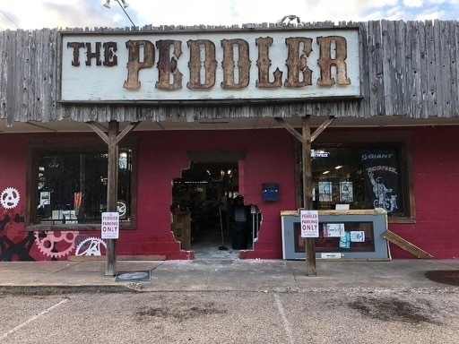
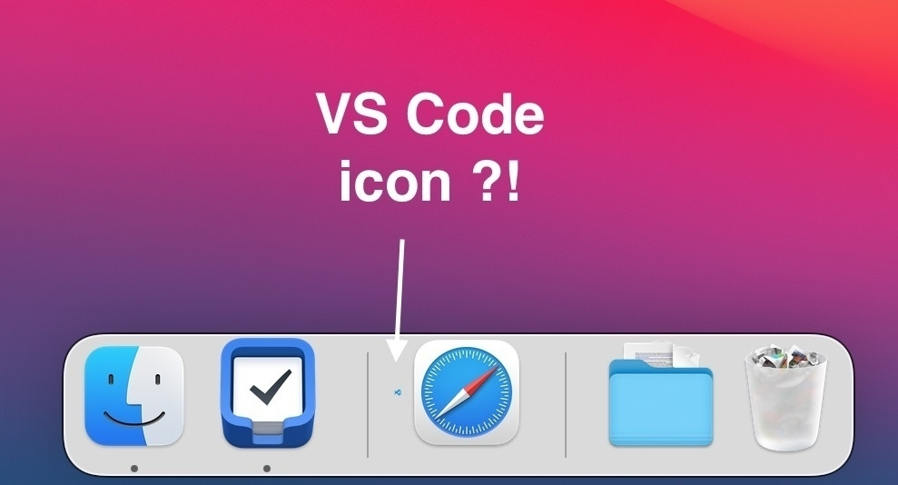
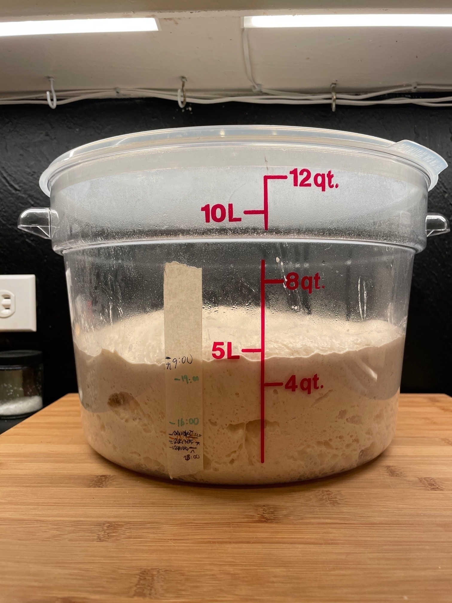
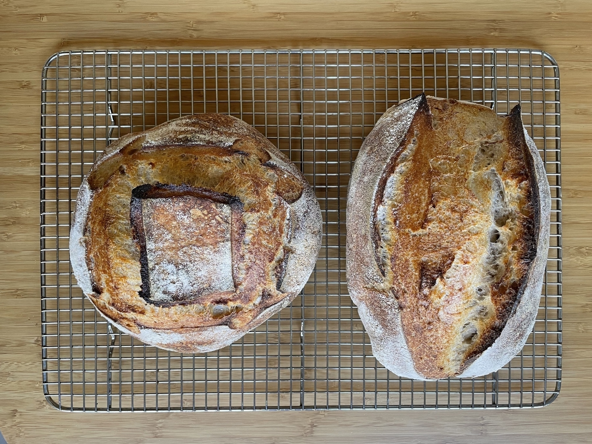
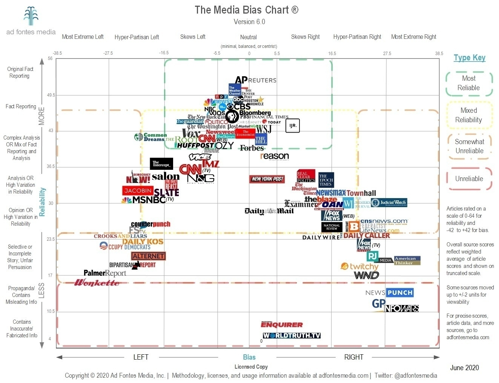

Music from the Week of July 28, 2024
Spotify playlist for the week of July 28, 2024.
- Lawrence – Hip Replacement
- Raffy Bushman – Bolo
- Datassette – Minus Fourteen VIP
- Datassette – Videohorse
- Lesser – Markus Popp Can Kiss My Redneck Ass (Live): Right up your alley if you enjoy old-school Venetian Snares.
Music from the Week of July 21, 2024
Spotify playlist for the week of July 21, 2024.
- Floating Points – Key103: Delightful drop.
- Hakushi Hasegawa has a new EP, KYŌFUNOHOSHI- Hakushi Hasegawa – Mouth Flash (Kuchinohanabi): A new EP. I can’t say it’s great, but it’s so… singular. The five tracks are worth a listen.
- Relistening to Curtis Mayfield’s 1973 album Back to the World, which I discovered at the Equipment Room in Austin. Still great. Right on for the Darkness is my favorite track.
- Hiatus Kaiyote – Cinnamon Temple
Music from the Week of July 14, 2024
Spotify playlist for the week of July 14, 2024.
- Matthew Herbert – The Horse Has a Voice (feat. Theon Cross)
- Matthew Herbert – The Horse Is Put to Work: One more from the same album. It’s reminiscent of old Cornelius.
- Tristan Perich – Open Symmetry: Section 3: Strong Reich vibes in this systhesizer + vibraphone piece.
- Sam Wilkes, Craig Weinrib, and Dylan Day made an album of guitar, bass, and drum and it’s excellent. I guess it’s jazz, but it’s so lyrical that I’d sometimes call it folk music. Wilkes really is an incredible bassist. I discovered him when Louis Cole introduced him as KNOWER’s bassist at the show I saw in Austin.
- Mildfire – Oh Boy - Part II: Similar to Jazzist, Grandbrothers, and I would even say Aufgang, and Efterklang. This popped up in my Recommend Weekly playlist. Looks like they’re from Oslo+Berlin. The whole EP is great, but too short! 7 minutes and 7 seconds! I want more!
- Well, Mildfire does have an album! Kids in Traffic was released in Feb, 2024. It’s good! The Oak Floor track reminded me of Mice Parade’s eponimous 2007 album.
Music from the Week of June 9, 2024
Spotify playlist for the week of June 9, 2024.
- Virginie B – Hyperboi: Wait, wat? So Louis Cole.
- Ola Kvernberg – Monolith
- Caroline Shaw – Sing On: Joy, oh joy! A new Caroline Shaw album!
Music from the Week of June 2, 2024
Spotify playlist for the week of June 2, 2024.
- Current Value – OFC
- Ola Kvernberg – The Purple Jack - Tuxcore: Very strong loop Jaza Jazzist vibes from this fellow countryman.
Music from the Week of May 5, 2024
Spotify playlist for the week of May 5, 2024.
- vōx – WET
- Sam Gendel – CIRCLE: Very chill “new jazz” from the L.A. scene. The bassist plays bass for Knower.
- Jega – Rigid Body Dynamics: Old school IDM.
Music from the Week of April 28, 2024
Spotify playlist for the week of April 28, 2024.
- Jessie Ware – Pearls: Solid 2023 disco.
- Lankum – Lord Abore and Mary Flynn
- Jorge Ben Jor – Para Ouvir No Rádio: Groovy Brazil track from 1975, discovered at The Equipment Room.
Music from the Week of April 21, 2024
Great music week after two weeks of holidays.
Spotify playlist for the week of April 21, 2024.
- Lemaitre – Forever
- John Tejada – How I’m Wired
- This Is The Kit – Careful of Your Keepers - Live at The Minack Theatre
- Aufgang – Hummus - Reverence Edit: I’m always onboard for more Aufgang.
- FJAAK – And You Feel
- Francesco Tristano – Dotted Line - Francesco Tristano Version: A version of a Brandt Brauer Frick prepared piano piece.
- Louis Cole – Things Will Fall Apart
- Tigran Hamasyan – The Kingdom
- Cornelius – Sketch For Spring: Is a new Cornelius album coming?
- Frédéric Chopin – 12 Études, Op. 10: No. 1 in C Major “Waterfall”: This is so much better than the demo version you get on cheap electric pianos! :D
Music from the Week of April 7, 2024
Spotify playlist for the week of April 7, 2024.
- Calamine – CE GAME-LÀ: Solid new Québec hip-hop.
- Machinedrum – CAPONE
- Oddarrang – White Wall Pt. 2: Reminds me of old Jaga Jazzist. This is a great discovery!
Music from the Week of March 3, 2024
Spotify playlist for the week of March 3, 2024.
The Mocambo Sessions with Shōtarō Moriyasu is a recording from a 1954 session recordded in Yokohama, Japan. It’s the only recording of Moriyasu. He plays the piano. Fantastic bebop.
BrhyM’s Deep Sea Vents album with yMusic is charming mix of folk songs with the contemporay classical touch of yMusic.
- Daniel Avery – Wonderland
- Dolphin Hyperspace – Miniscule Minnow
- Sleepnet – Finality
- 夢ノ結唱 – 最も濃いもの: Another impossible-to-describe track with Hakushi Hawsgawa.
- Elbow – Balu: Elbow really knows how to make rocking intros. The other single, Lover’s Leap, has an equally good intro.
- Jacob Collier – Over You: I’m not in love with Djesse Vol.4, but I like this song.
Music from the Week of January 28, 2024
Spotify playlist for the week of January 28, 2024.
- Elbow – Grounds for Divorce
- Kinga Glyk – The Friend You Call: Groovy with a strong Weather Report vibe.
- Kinga Glyk – Who Cares
- Sofia Kourtesis – La Perla - Edit
- Sofia Kourtesis – Madres: Always good D&B from Current Value. The whole album is worth a listen.
- Broken Shadows – Street Woman
- Reid Anderson – Song One
Music from the Week of January 14, 2024
Spotify playlist for the week of January 14, 2024.
- Brittany Davis – Sepricon: Groovy.
- Arvo Pärt – Tabula Rasa: II. Silentium - Live: This piece accompanied the 2nd half the keepsake choreography by ISHIDA dance company.
- 鈴木 弘 – ウォーク・トール
- BrhyM – Deep Blue: Funk + the unlikely participation of yMuisc, the contemporary classical ensemble.
- Ben Frost – The River of Light and Radiation. Frost also scored one of the dances of the ISHIDA show, but it wasn’t this particular piece.
Music from the Week of January 7, 2024
Spotify playlist for the week of January 7, 2024.
- Lusine – Transonic
- World’s End Girlfriend – Ave Maria: This is one of the strangest pieces of music I’ve heard. Reminds me of William Basinski’s The Disintegration Loops.
- Joshua – ??!?!!??!/&/:?!282928:€/??//?::€:1:1/&&/1:/ (BUG BRAIN)
- Ethan Iverson – Who Are You, Really?: This is the most The Bad Plus sounding track post The Bad Plus’ separation.
- PVA – Bad Dad: Nine Inch Nails vibes.
- PVA – Hero Man: Marie Davidson meets Wet Leg.
Music from the Week of December 31, 2023
Spotify playlist for the week of December 31, 2023.
- The Rapture – How Deep Is Your Love?: How have I never heard of the The Rapture? And how are they supposed to be a punk band?! They’re a very dancy punk band. Clearly, they’ve listened to LCD Soundsystem.
- The Rapture – Sail Away: It’s like realizing there’s more LCD Soundsystem than you knew existed.
- Marnie Stern – Plain Speak
- Shrimpnose – Melt
2023 Holiday Newsletter
This is installment #7 of my annual newsletter (previous years 2022, 2021, 2020, 2019, 2018, and 2017).
As usual, I hope you find a good thing or three.
Happy reading, watching, listening, and holidaying!
Three Things
Speaking of three things. I’m surfacing three things that are likely off most people’s radar and that I’ve kept returning to throughout the year.
- Watch Derek DelGaudio’s In & Of Itself on Hulu. Get a trial if you need to. It’ll rock your world. Don’t look it up!
- Read Toggles suck! by Joel Holmberg. It will change how you view many UIs. Especially those godawful cookie toggles.
- Listen to the LVMH episode of the Acquired podcast. It’s a long episode on the conglomerate that’s changed the luxury sector. More interesting than you’d think. They distinguish between premium, and even super-premium, where you pay more to get more utility, and luxury, where the price is disconnected from the utility. Luxury is a signal that the buyer transcends utility.
Big Idea
My back-of-the-envelope calculation is that I spent significant time with people I love for more than 100 days this year. (In addition to spending nearly every day with Anna.) I’m surprised by the number. It’s larger than I thought, yet I want it to be even larger.
I relish spending time alone (how else do you think I’d read all these things?), but thinking back, I realize that nearly all my happiest moments were with people. And for the memorable solo moments, they certainly weren’t at home! So this year, I made a conscious effort to both create and say yes to situations where I would spend more time with friends and family.
At the beginning of the year, Anna and I planned to have a weekly dinner with a cast of friends, with rotating host duties. We kept it going for a few months. Eventually, the structure drifted even though we still had regular dinners (we have a weekly reminder to invite friends over for dinner). It’s a lovely habit I recommend. We’ll pick it back up.
We visited friends. From day trips, to weekends, to week-long trips. Friends and family visited us for similar durations. We traveled with friends, from camping weekends to long weekends, to multi-week adventures. A 3-day weekend in another city feels like we were gone for a week. Pro tip: plan some separate/solo time during longer trips.
I walked and talked for a week with my dad and brother in the Grand Canyon, Zion, and Bryce Canyon. (By the way, National Parks: five stars!) My dad had been talking about visiting the Grand Canyon for as long as my brother and I could remember. It was magical to take him there instead of the other way around. If you can afford to take your family on such a trip, do it. Now.
Anna and I spent two weeks in Colorado back in October, playing outdoors, eating, drinking, and spending time with friends. But most importantly, we spent time just talking. That was some of the most meaningful time I’ve spent with someone I love. I wouldn’t be married without it.
That’s the big idea: spend time with people you love.
Read
Books
A quartet of books that influenced a lot of my thinking and decisions this year:
- Wanting: The Power of Mimetic Desire in Everyday Life by Luke Burgis: It’s actually a book about René Girard’s mimetic theory. Girard’s idea is that people rely on mediators to decide what to desire. Mediators can be internal to the group (friends in high school) or external (celebrities). The issue is that these mediators can become competitors for that object of desire, creating a positive feedback loop, building up pressure, and leading to conflict. Girard posits that the primary way to release the pressure is to focus all the blame on a single entity, the scapegoat. These ideas remind me of how, in medieval Europe, lords would regularly grant debt forgiveness to release the pressure from social discontent (that’s from Debt: The First 5000 Years). I’d like to reread this book next year.
- The Courage To Be Disliked: How to free yourself, change your life and achieve real happiness by Ichirō Kishimi and Fumitake Koga: A lovely dialogue about Alfred Adler and Adlerian psychology. Life changing. At least, much more than the other Japanese book that’s supposed to be life-changing.
- The Pathless Path by Paul Millerd: Are you on the default path? Mimesis applied to career choices.
- On the Move: A Life by Oliver Sacks: What an incredible life. Definitely *not* on the default path!
Other good books I read:
- The Art of Clear Thinking by Hasard Lee: Yes, another military book about decision-making. But having to make life-or-death decisions at MACH 1.6 requires a few handy tricks useful in other, more mundane situations. I appreciated the techniques and heuristics for reducing uncertainty. Thanks to him, I finally have a sense of what Fahrenheit temperatures mean! I loved the last insight of the book: for life decisions, go for the riskiest one when there are multiple equal options. It’ll give the greatest return.
- The Wizard and the Prophet: Two Remarkable Scientists and Their Dueling Visions to Shape Tomorrow’s World by Charles C. Mann: Mann paints the spectrum between the techno-optimist wizards and the system-thinking prophets. It’s a balanced book, not taking sides, presenting how the two extremes have approached challenges with food, fresh water, energy, and climate change. It’s a fantastic read. In no small part thanks to the story of the *incredibly hardworking* and impactful proto-wizard Norman Borlaug and the ecologist William Vogt.
- Range: Why Generalists Triumph in a Specialized World by David Epstein: Everything is fine. It’s ok, even great, to be a generalist. Instead of saying, “Here’s what I want to be,” say, “Here’s what I want to learn.”
- The Maltese Falcon by Dashiell Hammett: One of the o.g. noir novels. We listened to the audiobook narrated by the incredible William Dufris.
- Beneath her Skin by C. S. Porter: We walked into a bookstore in Lunenberg, NS, and asked if they had a murder mystery that took place ‘round these parts. They did! The writing is blunt, but the story, the place, and the pace are top-notch. A great summer read.
- The 2-Hour Cocktail Party by Nick Gray: A focused version of the The Art of Gathering. I’ve yet to put the ideas into practice.
- The Rock Warrior’s Way: Mental Training for Climbers by Arno Ilgnerby Arno Ilgner: A mindfulness and philosophy book disguised as a climbing book. It’s great.
- Castaways by Pablo Monforte and Laura Pérez: A sad love story that brought back teenage memories. Great art and interesting jumps through two timelines. Disappointing, choppy English translation.
Articles
My favorite piece of writing this year is The Maintenance Race by Stewart Brand: the story of 3 men who participated in the first round-the-world solo yacht race. An adventure story full of important lessons. Reminds me of boringtechnology.club.
What Happens to All the Stuff We Return? is a follow-up of sorts to Free Returns Are Complicated, Laborious, and Gross by Amanda Mull, which I linked to in 2022. It’s an interesting, scary, and funny piece. A few highlights:
- “Wardrobing” is renting an outfit for a fancy party and returning it afterward, stains and all.
- Most returns used to be D.I.F., which stands for “destroy in field.” It’s pitched as a way to “protect your organization’s reputation and focus on the future”.
- Almost 20% of online purchases are returned. It can go up to 40% for apparel.
- You know, these free Casper mattress returns? The cost of that flexibility increases the price by 8–9%.
- Good quote: “The rise of online shopping has been very good for people who build immense, low, flat-roofed metal structures.”
Other good reads:
- My Year in San Francisco’s $2 Million Secret Society Startup by Lydia Laurenson: The strange story of the Latitude Society, the art collective, art installation(s), and private club that thought it was a startup. Reminded me of Unlocking the Mystery of Paris’ Most Secret Underground Society (combined). (The catacombs are cooler than SF.)
- What’s expected of us by Ted Chiang: A short, very short story published in Nature. It’s worth three minutes of your time. Pairs well with Matt Webb’s Computers that live two seconds in the future about what happens when computers can do faster-than-realtime simulations.
- In Tech debt metaphor maximalism, Avery Pennarun (who made an appearance in the 2021 newsletter) takes the following financial debt concepts and applies them to tech debt: high-interest and low-interest, debt ceiling, debt-to-income ratios, debt-to-equity ratios, leverage risk, refinancing, bankruptcy.
- The Two Healthbar Theory of Burnout by Jeff Dwyer: A useful mental model. An over-shield and a health bar. The over-shield can take a beating and regenerate. Health cannot.
- The Coach in the Operating Room by Atul Gawande (of the Checklist Manifesto): Who’s on the right track? Doctors treat expertise as an always-evolving thing they need to keep on top of on their own. Athletes bring in a team of coaches to help them maximize and sustain their performance over years? Hint? Having a sports coach used to be unimaginable: “For the Brits, coaching, even practicing, was, well, unsporting.” Pair with season 2 of Against the Rules by Michael Lewis, which was all about coaches.
- SHITT: Should I Try That? by Austin Kleon: A flavor of FOMO affecting people who read a lot of productivity advice.
- Do Something, So We Can Change It! by Allen Pike: I try my best to remember this and use it.
- A peek into Japan’s Convenience Stores, part 1 (and part 2): Delightful. Includes an interesting urbanism trivia fact: “In 1973, the Japanese government passed the Large Scale Store Act, which required any business that had more than 1,500 m² (16,145 sq. ft) of floor space to be approved by a local committee.” That local committee was made up of… small shop owners.
- Discovering aphantasia by Austin Kleon: Did you know that some people can’t visualize things? Penn Jillette talked to Tim Ferriss (37:36) about his aphantasia (even though they don’t call it that) and it’s fascinating.
- Some blogging myths by Julia Evans and Writing, Riffs & Relationships by Tom Critchlow make for a good pairing about writing on the internet. I should listen to them more.
- Build tools around workflows, not workflows around tools by Linus Lee.
Watched
Around Christmas 2022, we decided to try to watch all the James Bond movies before the end of 2023. We’ve watched 17. There are 25. None of the first 16 is very good, even just good. I can barely recall any particular movie. Goldfinger (1964), the 3rd one, creates the prototypical Bond movie, which is interesting to see. GoldenEye (1995) is the first “modern” Bond I consider enjoyable to watch. It’s also the funniest one so far.
Movies
Other than all those Bond movies, I watched:
- Spider-Man: Across the Spider-Verse (2023): Extraordinary. Even better than Into the Spider-Verse. Anna leaned over to me halfway through the movie and said, “It’s so good!” The film ended and I said “No way!” out loud. The dad next to us leaned forward, his mouth open, in disbelief.
- Saltburn (2023): Beautiful, funny, enveloping, awkward, shocking. Still trying to decide whether or not I liked it.
- Whiplash (2014): Over-the-top, but fantastic acting and music about a young man who wants to become the best drummer there’s ever been.
- Tár (2022): Haunting movie about power and music. Not really the point, but there’s some beautiful architecture.
- The Menu (2022): I didn’t know what I got us into when we started. More… shocking than I thought. Hit uncomfortably close to home.
- Guy Ritchie’s The Covenant (2023): A surprisingly poignant war story.
- Code8 (2019): A good sci-fi movie on a tight budget.
- Nobody (2021): My kind of airplane movie, but I watched it while cooking and doing the dishes.
- Joy Ride (2023): Meh. Too sketch-comedy for my taste. But the climax scene was poignant nonetheless.
- See How They Run (2022): Bad. Tries hard and fails to be a Wes Anderson whodunit.
TV
- The Climb (2023) on HBO: Starts slow and uncertain. But then it’s heartwarming how everyone, from the participants to Chris Sharma, gets into it. A lovely example of humans being great for each other, even when competing. The places they climb are stunning.
- I continue my quest to watch all of The West Wing, and I’m enjoying every minute of it.
Short videos
- We Asked 100 People to Scream as Loud as They Can: This was weirdly delightful. And also, many of these people have style. There was an art installation a few years ago at Blue Genie where a 20-foot-tall monster’s face lit up as you screamed louder and louder. It was cathartic.
- Hidari - The Stop-Motion Samurai Film: a beautiful, intense, and incredibly violent 4-minute short film. All the characters are wooden puppets, which makes the violence bearable: No blood, just wood dust. Via Kottke.
- Grand Canons, a Visual Symphony of Everyday Objects: Stop motion animation of watercolor paintings of everyday objects. Beautiful, with perfectly matched music by Yep* that reminds me of Steve Reich. Like Kottke says, trust me and just watch it.
- Sharpest Crab Kitchen Knife in the World: That title isn’t a typo. That person makes knives out of unorthodox materials like chicken, cucumber, and algae. It’s impressive, delightful, and so weird.
- How To Shut Down Tolkien by Brandon Rhodes: It was delightful and inspiring. It’s an impressive feat of public speaking to keynote a programming conference about programming without once talking about programming while talking about programming the entire time.
- Making an Infinite LEGO Domino Ring: Mesmerizing continuous domino machine.
- Amazing Commercial Featuring the French National Football Team: Yes, it’s an ad, but do watch it.
- Self-Assembling Wires: Emergence.
- 21-Year-Old Student Pilot Lands Her Plane Without Nose Wheel!: calmness + expertise.
- Hunting Kestrels Are Nature’s Steadycams: Satisfying.
- 12 Minutes of VR Fails │#1: I can’t say I’m proud of this, but I cried so hard I thought it was worth sharing.
- Marc Rober - Amazing Invention- This Drone Will Change Everything: The usual high-pace entertainment of Rober, but about the genuinely amazing Zipline delivery drones in Rwanda. It takes Zipline 90 seconds from a doctor asking for drugs or blood to the drone leaving the station.
- Freshpet Holiday Feast - 13 Dogs and 1 Cat Eating with Human Hands: Another ad, but I still cried with laughter.
- Homeowners Associations: Last Week Tonight with John Oliver: Terrifying. HOAs? Just don’t.
- Antikythera Fragment #3 - Ancient Tool Technology - Hand Cut Precision Files: 1) I learned how files are made, which is pretty cool. 2) This is part of a long-running project to recreate an Antikythera mechanism, an Ancient Greek hand-powered solar system model, from scratch by hand.
Podcasts Episodes (or short series)
- Sporkful - Mission Impastable: Compelling short series about Dan Pashman’s dream of making a new pasta shape. My brother bought me boxes of them, cascatellis. They’re fun, chewy, and tasty. Central Market sells them in Austin.
- Reviewing Cynefin - weaving sense making into the fabric of our world with Dave Snowden on XAgility Podcast: In a complex system, you cannot change the humans and you cannot change the components. You must change the interactions. That means changing the mechanisms, when and how humans interact together, so their behaviors change to adapt to the new system. One example Snowden offers is changing who your teenage kid interacts with friends instead of defining how they should be.
- PJ Vogt (previously of Reply All) had a frank and intelligent discussion about attention with Ezra Klein. Klein shared a good line from Jenny Odell’s book How to Do Nothing: Why not communicate with the few people with the context to understand us instead of thousands who don’t? Pairs well with a reread of Four Thousand Weeks by Oliver Burkeman.
- Jim Collins: Keeping the Flywheel in Motion on The Knowledge Project
- A Good Circle on Revisionist History: A story around the fact that many universities are getting richer *while* the cost of admission is increasing. For example, Princeton made $3.8 billion in investment income last year but spent $2 billion on its operating income. It could let everyone in for free, but they keep asking people for tuition. In contrast, Hope College has decided to let students in for free as long as they commit to giving to the school after graduation. It’s an inspiring story of giving and giving back.
- Lesley Sim on Skill Acceleration in Ultimate on the Commonplace Expertise Podcast: It’s arguably about coaching ultimate, but it’s an impressive demonstration of combining ideas from different fields to achieve results. She uses click training, a form of positive reinforcement common in animal training, to train her frisbee team out of bad habits. To stop players from making “lazy throws,” she blew a whistle to positively reinforce every time their hand was below their knee when throwing. The lazy throws disappeared after a few practices and never returned. There’s a version of this technique called TAGteach. She also discusses reframing difficult, multi-faceted problems in terms of simple ones. For example, her team often lost possession of the disc because they couldn’t make a pass before the end of the 10-second limit. Addressing the root causes would need coaching cutter to be ready faster, handlers to have a better vision of the game, and everyone to communicate better. Instead, she substituted these hard problems for a simple one: she made them play with a 6-second limit. Another example is that she wanted her players to make better throws. Instead of doing complicated throwing clinics, she had asked them to complete 100 throws in three minutes. Players had no choice but to get faster and more accurate. This is an interesting lesson about applying constraints in the right places and delegating problems, not solutions.
Music
It was a “slow” year. I listened to 10k tracks (5,500 uniques) for 41,292 minutes (688h) of music by about 2,160 artists (says Spotify). Lambert, The Flashbulb, GoGo Penguin, Hauschka, and Stimming were the five artists I listened to the most. There’s a playlist of my favorite songs(24h) and my favorite albums (41h).
I gather from the Spotify data that this year I did deep work (or work I dreaded). I have used the same *Work and Write* playlist since 2015. It’s mainly solo piano, jazz piano trios, and light electronica. It has a nearly 100% success rate of putting me in flow. I’ve been dilligent at protecting it: I stop listening to it when I drift and start doing non deep work. I recommend this hack!
On week 31 (thanks Danes!) I started creating weekly playlists of songs I liked and publishing them on my blog. There’s an RSS feed for that. What I’d like to do next is automatically create thematically similar covers, but all unique, for the year using generative art techniques. Something *like* NFTs, but definitely not NFTs.
Now for specific recommendations.
I discovered I liked (some) hyperpop, “a maximalist or exaggerated take on popular music,” says Wikipedia. Underscores is a good example. An even better example is this set by 100 gecs at Boiler Room in L.A.. It’s all. over. the. place. But it’s so much of fun. Check out 59:00 for a glimpse of how wild it is. And do read the comments. Speaking of 100 gecs was mesmerized by Acai playing the 10,000 gecs album on Clone Hero Drums. Wut.
- Thomas Bangalter - Let There Be Daft Epic! Omfg! - Live @ Cinespace 4.21.09: Thomas was half of Daft Punk. It’s a banger.
- I heard of Fred again.. last year but listened to him only this year. He’s a weird beast. He has a knack for weaving samples of people talking into calm, eerie songs. But he can also go into full-on party mode. His Tiny Desk Concert is a lovely example of the former. For the latter, he did an excellent Boiler Room set. Then Four Tet, Skrillex, and him (!) had a fun set at Times Square. Finally, they ended up closing Coachella (!!) because Frank Ocean dropped out at the last minute This write-up by Katie Bain is funny: “Skrillex and Fred, dressed in black and white t-shirts, respectively, expressed their excitement about it all with a sort of boyish delight while dancing around on the decks. Meanwhile, Four Tet gave more satisfied dad energy while just walking around the stage in his green t-shirt and cargo shorts with a stunned look on his face.”
- Machinedrum released two excellent albums this year, River of Heaven, with Holly, and 4#TRAX.
- Two sets from a few years ago by the drum’ n bass DJ A.M.C. 6-deck DJ Set for UKF On Air and A.M.C Presents ENERGY for D&BTV: Locked In.
- Hiromi: Tiny Desk Concert: Japanese pianist who embodies groove. Auistinites, she’ll be in Austin on April 26, 2024.
- Grandbrothers - Late Reflections
- yMusic - YMUSIC: Approachable contemporary classical music.
- Neil Cowley - Battery Life is the “root” album. Later in the year, he released Fragmented Recall, where he replays the album after 4 months of not listening to it. And finally, Battery: Live.
- Ligeti Quartet & Anna Meredith - NUC: More comtemporary classical music.
- Sam Gellaitry - UNDER THE ILLUSION
- Himuro Yoshiteru: Eclectic groove. With influences from Pretty Lights and Catarina Barberi.
- Bleu Jeans Bleu – Top Minou: Montréal band making catchy, funny, and strangely poetic songs about everyday things. They’re music chameleons.
- Karkwa – Dans la seconde: One of my favorite bands from Québec, back with a solid new album after a 12-year hiatus. I saw them live in Montreal on Nov 30; it was one of the best shows I’ve seen. Patrick Watson opened for them!
- Slug - Thy Socialite!: 70’s rock meets 70’s prog rock, but made with 2023 sensibilities, by a previous member of Field Music.
- Rival Consoles - Now Is: Ambient, loopy. Still upset I missed their show in Austin this fall.
- M|O|O|N - Trackmania: Soundtrack to a video game. 0_o
- Brad Mehldau - Your Mother Should Know: Brad Mehldau Plays The Beatles: The title should be sufficient.
- The Necks - Travel: Australian jazz trio that plays long, tapestry-like pieces.
- Unknown Mortal Orchestra – V:
- GoGo Penguin - Everything is Going to Be OK: Every GoGo Penguin album is a great album. More jazz piano trio, but this one leaning more into electronica.
- Second Woman - Second Woman: From 2016. So glitchy.
- Inwards - All The Things You Left Behind: Could be the playlist for a wonderful video game.
- Bendik Giske - Bendik Giske: Solo saxophone like you probably haven’t heard before.
- Noga Erez - KIDS: Catchy songs that make you want to dance in the living room. The KIDS (Against The Machine) is a creative, electronics-free version of the album.
- Thomas Vanz - Colors of invisible: Calm solo piano
Music from the Week of December 10, 2023
Spotify playlist for the week of December 10, 2023.
- Rina Sawayama – Flavour Of The Month
- Spell Songs – Thrift (Dig In, Dig In) - Live at Birmingham Symphony Hall: Would be a really nice around-the-fire song.
- Daniel Brandt – Tha Tian: Delicious loops.
- Reid Willis – Sifting Through The Years - Extended Version: That Mesh sound.
Music from the Week of December 3, 2023
Spotify playlist for the week of December 3, 2023.
- Pasocom Music Club – Ch.XXXX - Milk Talk Remix: Daft Punk-esque, so is Omitnak -AcidGelge Acid House Remix.
- LITE – Crushing: Not as dancy as Artist of the Year, but similar crunchy sounds.
- DJ Re:Code – Prodigal: Some hyper hyperpop.
- Genesis Owusu – Survivor
- PAVANE – Children
Music from the Week of November 26, 2023
Spotify playlist for the week of November 26, 2023.
- Bleu Jeans Bleu – La pure pureté du beurre pur 100% pur beurre: I 100% endorse this song’s message.
- Reid Anderson – Song One: Reid Anderson and Dave King of The Bad Plus, with Craig Taborn. Sometimes feels like a crossover between The Bad Plus and recent Brad Mehldau. What else do need to know?
- Jeremy Blake – Annihilate: Like a dramatic soundtrack song.
- Crystal Fighters – Multiverse
- Four Tet – Feedback Mango - Live at Alexandra Palace London, 24th May 2023: I didn’t love this live album overall, but I like this song.
Music from the Week of November 5, 2023
Spotify playlist for the week of November 5, 2023.
- Machinedrum – BTHE1
- Roni Size – Brown Paper Bag: 1997 drum and bass is so chill. This album won the Mercury prize that year.
- Roni Size – Beatbox: more from that same album.
Music from the Week of October 29, 2023
Spotify playlist for the week of October 29, 2023.
- Son Lux – No Crimes: Not a new song,—it’s from the 2013 Lanterns—but it’s so good, and so are the new songs on this extended version.
- Thomas Vanz - Colors of Invisible: Solo piano. A great album to work to.
- Hiroyuki Sawano – 祓魔師強奏曲 第四楽章: D+T
- Hiroyuki Sawano – AOE組曲 第三楽章: i9: Interesting groovy piano + accordion piece. Reminds me a little of Hauschka.
- Kings Return – The Kings’ Nutcracker Suite: Loves me some a cappella. Especially a cappella Christmas songs!
Music from the Week of October 22, 2023
Spotify playlist for the week of October 22, 2023](https://open.spotify.com/playlist/5v0v4iBQu4XRXdgW6auO8D).
- The Submarines – 1940 - AmpLive Remix: never heard of this band, but this remix is 🔥
- Teeth Of The Sea – Get With the Program
- Shed – Absolute
- Hauschka – Inventions: on a new album! For fans of prepared piano, if such a thing exists…
- Son Lux – Lost It To Trying (Give In And Give Out): I love that Son Lux has stayed/become even more Son Luxian over time. ♥️
- Nathan Fake – Sky Hook
- Crystal Fighters – Multiverse: They always have great party songs.
- Matmos – Why?: Catchy. In a Matmos way.
Music from the Week of October 15, 2023
Spotify playlist for the week of October 15, 2023.
- The Smile – You Will Never Work In Television Again - Live at Montreux Jazz Festival: The live version is at least as good as the studio one.
- G Jones – Maybe
- G Jones – Dancing On the Edge
- Weval – Unstoppable
- Ruby My Dear – Grwth
Music from the Week of October 8, 2023
KNOWER’s KNOWER FOREVER album is finally on Spotify. Run and listen to Do Hot Girls Like Chords?.
Spotify playlist for the week of October 8, 2023.
- Hauschka – Inventions
- Son Lux – Lanterns Lit (Among The Living)
- RJD2 – The Proxy: Very cool start, sampling Steven Reich’s Electric Counter Point: I. Fast.
- Rymden - The Mountain: Strong Esbjörn Svensson Trio vibe, probably because it’s the same bassist and drummer! I like Rymden. I miss E.S.T.
- King Creosote – It’s Sin That’s Got Its Hold Upon Us
Music from the Week of September 10, 2023
Spotify playlist for the week of September 10, 2023.
Sylvan Esso were guest DJ on Autin’s KUTX on Sep 16, 203. It was delightful. Many of the songs I enjoyed were via them. Otherwise, it wasn’t a particularly good week muscially. They happen.
- Karkwa – Nouvelle vague: First album of new music since 2010.
- Sofia Kourtesis – Madres: Via Sylvan Esso.
- Ruth Garbus – Mono No Aware: Via Sylvan Esso.
- Hudson Mohawke – Set The Roof: Via Sylvan Esso. A banger.
- Barker – Birmingham Screwdriver: Noisy. Glitchy. Rumble. Via Sylvan Esso.
Music from the Week of August 27, 2023
Spotify playlist for the week of August 27, 2023.
- KNOWER – Do Hot Girls Like Chords: The intro is 🔥🔥🔥. 🙀 Knower is one of Louis Cole’s other projects. The album is only available on Bandcamp.
- DJ Sabrina The Teenage DJ – Brave: catchy house music by an oddly named DJ. Discovered thanks to this review on Rate My Music.
- Daði Freyr – If You Want To: The Icelandic band keeps on making catchy songs.
- Genesis Owusu – Tied Up!
- Noga Erez – NO news on TV (feat. ROUSSO): I feel a boppy Gorillaz vibe.
- Noga Erez – Fire Kites
- Machinedrum – Quasar
- Oneohtrix Point Never – A Barely Lit Path
Music from the Week of August 20, 2023
It was a good music week.
Spotify playlist for the week of August 20, 2023.
- Brandt Brauer Frick – This Feeling - Grandbrothers Remix: Can’t not add a song that involves these two artists.
- Nikki Nair – Wake Up
- Genesis Owusu – Tied Up!
- Lusine – Transonic
- Stereolab – Metronomic Underground: Hypnotic.
- Stereolab – ABC: The first part sounds like a Jimi Hendrix song, but without all the guitar chops. I dig it.
- Fallulah – Bridges: Bouncy French pop. Reminds me a lot of the Danish artist Fallulah.
- Tomu DJ – Optimistic: Pretty sure the drums are from a NES.
- MADMADMAD – You See, You Do It Like This: I hope to see them live one day. I’m sure it’s a helluva party, based on KEXP live video that doesn’t even have an audience. Strong Artist Of The Year vibes.
- Artist Of The Year – sEXY mE, SEXY yOU: “It’s gonna be a hardcore track.”
- Get The Blessing – Oscillation Ochre
- Natural Wonder Beauty Concept – Natural Wonder Beauty Concept
- Noname – namesake
- Parra for Cuva – Cupa Cupa
Music from the Week of August 13, 2023
Spotify playlist from the week of August 13, 2023.
- This Is The Kit – Inside Outside
- John Monroe – Sleeping on the Floor: I’m a sucker for this sound, which reminds me of 1970’s Gentle Giant. John Monroe is a member of the excellent Field Music.
Music from the Week of August 6, 2023
It looks like I may like a genre called hyperpop. Spotify’s hyperpop playlist has a few artists I already know and enjoy. Discovery ahead. (Update: an entire playlist of hyperpop is too much. I like some hyperpop artists and songs. I don’t like hyperpop as a genre.)
This set by 100 gecs at Boiler Room in L.A. is all. over. the. place. But it’s a lot of fun. Check out 59:00 for a wild taste. And do read the comments. Speaking of 100 gecs, the video Acai playing the 10,000 gecs album on Clone Hero Drums for the first time mesmerized me. Wut.
Spotify playlist for the week of August 8, 2023.
- Optometry – Technicolor - Silent Servant Remix
- Optometry – Whatever You Need - Dntel Remix: Sounds like The Postal Service. Makes sense, since Dntl is Jimmy Tamborello is The Post Service.
- Moderat – Milk - Sped up Version: Funny. I didn’t care much for the normal-speed version of this song. But I dig this one.
- Paradise Circus – Nyctophile: Starts with a weird distorted sample from Gentle Giant’s Knots.
- MISOGI – ULTRABLAST: More hyperpop.
- Underhill – Dead Foot: Current Value had another project called Underhill for a while. It’s a little less drum n’ bass, a little more like older Amon Tobin and/or Two Fingers.
- Current Value – Heavy Weight: On the same EP as Underhill’s Dead Foot.
- Rachael Dadd – Feather
- Noname – beauty supply: Jazzy hip-hop. I dig it. I like this album even more than her 2016 Telefone.
- Son Lux – Easy: This is so different from the original song! Fascinating!
- Son Lux – No Crimes (New History): This remix feels even more Son Lux-y than the original song.
- Tomu DJ – Band Man
Music From the Week of July 31, 2023
Now with a playlist!
- Max Cooper - Swapped / Stereoscopic Dive: Swapped is an intense noisy single. Stereoscopic Dive is more of his usual rhythmic ambient stuff. Vertebrea / Forgotten Places is almost drum n’ bass, with vocals by Kathryn deBoar. Her voice reminds me of Béatrice Bonifassi’s voice on DJ Champion’s No Heaven.
- Maribou State – Midas: A chill song fit for an afternoon in the park, if it wasn’t so damn hot. Perfect for a Copenhagen afternoon-in-the-park party.
- Tarta Relena – El suïcidi i el cant
- Laila Biali – Got to Love
- Snarky Puppy – Sleeper: I think it’s my first time listening to a full Snarky Puppy album despite a friend mentioning them nearly a decode ago. This particular song reminds me of Brad Mehldau & Mark Guiliana’s Taming the Dragon. This video of Larnell Lewis during the recording of the album We Like It Here trigger my listening. Via Kottke.
- Yaeji – For Granted: I think they’ve listened to Everything in Its Right Place quite a bit.
- Bad Snacks – Let’s Go (299 Mill): Short, gritty bass-centric groove.
- underscores – Locals (Girls like us) [with gabby start]
- Son Lux – No Crimes (New History): All the ingredients of a solid Son Lux song. (Update: it’s a remix, so yeah, duh.)
Music From the Week of July 24, 2023
- Hakushi Hasegawa – Mouth Flash (Kuchinohanabi): The (un)usual bouncy glitchy pop for Hasegawa-san. It’s really hard to describe.
- Tarta Relena – nunc aperuit remix: Glitchy, drum ‘n bass-y remix of a Catalan vocal duet. You know. The usual.
Music From the Week of July 17, 2023
- Bishop Briggs – Wild Horses: still a banger.
- Cory Wong – The Grid Generation: Louis Cole brings the groove, again.
- Lusine – Zero to Sixty: ear-tickling single.
- Teeth Of The Sea – Megafragma
- Walker & Royce – Stop Time
- Flyte – Tough Love
- Jacob Collier – WELLLL: Jacob Collier does rock anthems now? Rock anthems that sound like Rage Against the Machine?
Music From the Week of June 12, 2023
- GRiZ – Can’t Hold Me Down: The synths at 2:10 are fuzzy sandpaper to my ears.
- 1788-L – Human Machine
- Stimming – 22 Degree Halo
- Stimming – For My Better Half
- Max Cooper – Vertebrae / Forgotten Places: Drum n’ Bass with the Max Cooper touch.
- Django Django – Slipstream: Django Django is after your dance floor.
- Neonlight – Desire - Killbox Remix
Music From the Week of June 5, 2023
- Stefano Bollani – In festa sul palco: Solo piano. Reminds me of Matt Herskovitz.
- Stefano Bollani – All’inizio
Music From the Week of May 29, 2023
- Martyn – Dragonfly: Solid bass groove
- Spoon – Sugar Babies
- Inwards – Custard: Reminiscent of Aphex Twin, The Bad Plus covering Aphex Twin, and The Postal Service.
Music From the Week of May 22, 2023
- Daði Freyr – Whole Again: Catchy song from the Icelandic Eurovision winners.
- Ouri – 1st bite: Camille’s Les Loup meets Tune-Yards meets Sleigh Bells.
- Clark – Town Crank
Amy Winehouse (feat. Blackmer): Great song by Burlington, VT, artist Willverine.
2022 Holiday Newsletter
This is installment #6 of the annual newsletter I share with my colleagues at Enthought (previous years 2021, 2020, 2019, 2018, and 2017).
I feel like I consumed less media this year, and yet, there is so much stuff! (And even more I didn’t include!)
I hope you’ll find a good thing or two.
Happy Holidays!
Three things
I’ve been told a few times: “your newsletter is amazing, but I haven’t read or watched or listened to anything from it.” This is my attempt to fix that. If you do only three things, make it these three:
- Listen to Partita for 8 Voices by Caroline Shaw.
- Read Too many needles by Oliver Burkeman (author of Four Thousand Weeks). It helped me take a step back from my desire to read all the things. This sentence was key: “After all, you presumably don’t feel overwhelmed by all the unread books in the British Library – and not because there aren’t an overwhelming number of them, but because it never occurred to you that it might be your job to get through them all.”
- Watch One-Minute Time Machine, a delightful and surprising short film.
The Big Idea: Cynefin
The Cynefin framework (kuh-NEV-in) is a framework to make decisions by making sense of the domain you’re in: clear, complicated, complex, and chaotic. Depending on the domain, the “right thing to do” will change.
- The clear domain is known knowns. Things are stable, causes and effects are clear. It’s the world of rules and best practices: you acquire data (sense), categorize them, and respond appropriately.
- In the complicated domain, it’s known unknowns. You don’t know the cause-and-effect relationship, but you can figure it out with analysis. You sense, analyze, then respond. It’s the domain of experts: engineers, lawyers, and surgeons.
- In the complex domain, it’s unknown unknowns. You figure out the cause and effects after the fact. You must probe the system first, sense, then respond. Probes are experiments that are safe to fail. Here are markets, culture, and much of software development.
- In the chaotic domain, cause and effect are… a mess. You can’t take wait to figure out what they are. You must act first, then sense and respond. Be quick and decisive. This is crisis management, September 11, and March 2020 and the COVID pandemic. You want to get out of this domain ASAP.
Things go wrong when the approach you chose doesn’t match the domain you’re in. It would be a valuable framework to convey to clients that want you to take the wrong approach, but teaching it to them is a tall order. Here’s a great quote from the HBR paper A Leader’s Framework for Decision Making:
As in the other contexts, leaders face several challenges in the complex domain. Of primary concern is the temptation to fall back into traditional command-and-control management styles—to demand fail-safe business plans with defined outcomes. Leaders who don’t recognize that a complex domain requires a more experimental mode of management may become impatient when they don’t seem to be achieving the results they were aiming for. They may also find it difficult to tolerate failure, which is an essential aspect of experimental understanding. If they try to overcontrol the organization, they will preempt the opportunity for informative patterns to emerge. Leaders who try to impose order in a complex context will fail, but those who set the stage, step back a bit, allow patterns to emerge, and determine which ones are desirable will succeed. They will discern many opportunities for innovation, creativity, and new business models.
Like Simon Wardley’s maps, the “sense-making” exercise to map domains and identify where you are helps setting the “direction” to go towards to achieve the desired results. Unsurprisingly, Snowden and Wardley know each other. Wardley wrote a chapter for the book Cynefin: weaving sense-making into the fabric of our world.
The HBR paper above is a good entry point, so is this video of Snowden. For a software development angle, check out Liz Keogh’s Cynefin for Developers and Estimating Complexity. She also has a great summary. Even Stack Overflow wrote about Cynefin. If you want to dig further, there’s a Cynefin wiki and the site of Snowden’s company, The Cynefin Co.
Read
Free Returns Are Complicated, Laborious, and Gross by Amanda Mull: I didn’t like sending stuff back, now I really don’t want to send anything back.
Outliers, Revisited on Malcolm Gladwell’s Revisionist History podcast (transcript): In schools and in sports, the “best” people in a class or team have the largest “relative age.” That’s the age difference to the youngest a person can be to join the team or class. On a hockey team where the cutoff date is Jan 1 for selection, 40% of players will be from Q1. For young people, months make a big difference on size and ability! They go to UPenn and talk to 75 seniors. Everyone is older than the minimum age, by a lot. Some people are 20 months older than the minimum age. Is there a name for this phenomenon of aggregating a “feature” too much and losing important info? Aggregation error? They suggest using a formula to compensate or account for the differences within a group. Even though it “works,” it feels icky.
Self Documenting, Interactive Make by Exthoughter Matt Planchard. A wonderful nerdy interactive make script with help. Over the top.
You need to start writing Architecture Decision Records by my colleague Rahul Poruri. Organizations need decision records for all big things, not just software. We could adapt decision journals for teams. I recently discovered Loomio, a tool explicitly designed for collaborative decision-making. It assumes the decision will be made asynchronously by a distributed group of people.
A tiny CI system by Christian Ştefănescu. This is a neat little project: self-host a Git server and your own little CI server based on Git post-receive hooks.
Novelty Search and the Problem with Objectives PDF by Joel Lehman and Kenneth O. Stanley: Optimizing for novelty, not fitting an objective. Relevant to art, creativity, and… science?
Characterizing people as non-linear 1st order components in software development is a 1999 talk by Alistair A.R. Cockburn of the Agile Manifesto. This predates the Agile Manifesto by two years. It’s a great telling of the evidence that human factors are the most important predictors of software quality, not technology choices. For an even more fundamental take on this topic, check out The epistemology of software quality by Hillel Wayne.
Justice Stevens reads the fine print: Matthew Butterick: Law + typography + David Foster Wallace.
Contributing to Complex Projects, a how-to by Mitchell Hashimoto, founder of HashiCorp.
Architecture, Design, and Urbanism
Sustainable Apartments – A New Model for the Future by Jeremy McLeod at TEDxStKilda: Interesting because of the financial, environmental, and social design of the apartments. They only get ethical investors to buy the site. They interview people for who gets to buy, but they use a lottery to decide who gets to buy which appartment. There’s just one bathroom per apartment, no chrome because it’s toxic, no tile because it comes from Spain or Italy (it’s in Australia). They prioritize social spaces within the building.
The Bagworm Caterpillar’s DIY Mobile Log Cabin: Nature is just incredible.
The Ugly, Dangerous, and Inefficient Stroads found all over the US & Canada: will give you a word for the terrible stroads of Austin, like Burnet and Airport.
Books
It’s been a good book-reading year. I think it’s due to a good amount of travel and a regular-enough book club. I read books marked with a ♣️ (club, getit?) as part of the Enthought book club.
- ♣️ No Rules Rules by Reed Hastin and Erin Meyer: a fascinating account of how Netflix manages their (creative) organization. Each component taken separately would be unstable or unsustainable in other organizations, from the absence of vacation policy, to the culture of feedback, to the requirements of taking any recruiter’s call. Yet, when all implemented together, it creates a solid organization edifice.
- Sourdough by Robin Sloan: A novel about a programmer who gets into baking because of a powerful sourdough starter. I loved it.
- ♣️ Are Your Lights On?: How to Figure Out What the Problem Really Is by Donald C. Gause and Gerald M. Weinberg: should be required reading for any consultant. It’s peculiar, as my colleague said, but the stories are great. Some key lessons. Don’t accept someone else’s solution as your problem statement. Check if you can change the question if you don’t like the answer. Don’t solve other people’s problems if they can solve them perfectly well. Don’t be a solution problemer: someone with a solution in search of a problem.
- ♣️ Radical Candor: Be a Kick-Ass Boss Without Losing Your Humanity by Kim Scott: coined the term ruinous empathy. When being nice is actually damaging. Hit home.
- Bullshit Jobs: A Theory by David Graeber: A bullshit job is pointless for both the company and the individual. He develops an ontology for such jobs: flunkies, box tickers, goons, duct tapers, and taskmasters. It’s an incisive and deeply funny analysis of work and working. I loved Chapter 6 on the history of the concept of time and labor, and the difficulty of distinguishing between social value and economic value. Recommended.
- The Premonition by Michael Lewis: Interesting reading this after reading about the Cynefin framework. The pandemic was definitely in the chaos and then complex realm. Charity Dean was a master of dealing with chaos. Carter Mecher somehow managed to turn a complex situation into something complicated. The CDC and the (US) government were doofus, not even acting as if the situation was simple, they were just concerned about optics and saving their own butt. The government really was f’ed up.
- A World Without Email by Cal Newport: Coins the term Hyperactive Hive Mind: “A workflow centered around ongoing conversation fueled by unstructured and unscheduled messages delivered through digital communication tools like email and instant messenger services.” And the term Attention Capital Principle: “The productivity of the knowledge sector can be significantly increased if we identify workflows that better optimize the human brain’s ability to sustainably add value to information.” Newport theorizes that the lack of friction in communication is leading to out-of-control feedback loops. A core proposal is to “seek workflows that (1) minimize mid-task context switches and (2) minimize the sense of communication overload.” This must be done at the team or organization level. It’s hard to solve as an individual.
- The All-Road Bike Revolution by Jan Heine: a summary of everything Bicycle Quarterly has learned about bicycles that feel great. I see a new bike in my future.
- Who: The A Method of Hiring by Randy Street and Geoff Smart: Presents a rigid framework for recruiting. The full process is long for hiring for technical roles, but seems appropriate when hiring for leadership and management roles. Makes a big deal of reaching out to 7 references. Ultimately, the key point is to hire great people, not good people. Echoes * No Rules Rules* and Netflix.
- Fragments of an Anarchist Anthropology by David Graeber: I wonderful little book I read after Bullshit Jobs. I knew nearly nothing about anarchism and this was eye-opening. He makes the point that anarchy is based on action, not theory. The various anarchy groups are named based on how they act: anarcho-syndicalists, insurrectionists, anarcho-communists, individualists, and not on their thought leaders, like Marxist-Leninists, or Maoists. There’s also a powerful and scary idea about democracy: it can only exist if there’s both a belief that people should have equal rights in making ground decisions and a coercive apparatus to enforce those decisions. In a democracy, one must lose (their election/vote) and the winner’s choice must be enforced. Instead, anarchist movements are based on consensus: no one loses. There’s no assumption of changing someone’s mind. People decide on a common course of action. There are only two forms of disagreement: “stand aside” or “block.” The former says “I don’t like it and chose not to participate but won’t stop anyone from doing it,” whereas the latter is a veto arguing the action would violate the reasons for being a group. (That’s super interesting: it means in a democracy, someone must lose face. In anarchy, no one does.) He wrote this book early in his career, but you can see elements of future books: Debt, Bullshit Jobs, and The Dawn of Everything.
- Saga: Compendium one by Brian K. Vaughan and Fiona Staples: A graphic novel that’s weird, original, and continually surprising about a couple from two different planets caught in a deadly war. Not family-friendly, but highly recommended.
- How to Begin: Start Doing Something That Matters by Michael Bungay Stanier: a straightforward process for defining and getting started on big personal projects. An easy read.
- Learning to Build by Bob Moesta: a follow-up to Demand-Side Sales, but on the building and prototyping stage. One particular lesson is the use of the Taguchi Method to design experiments and explore a problem space efficiently.
- The Circle by Dave Egger: a dystopian novel about a young woman joining a new all-powerful tech company encouraging everyone to share more about themselves. It was fine but not great.
- In the beginning by Diane Arbus: photography. I saw her work at Pier 24 in San Francisco and enjoyed it. The book was on sale at BookPeople.
- Wabi-Sabi for Artists, Designers, Poets & Philosophers by Leonard Koren: things can be perfectly imperfect.
- Y: The Last Man - Compendium One by Brian K. Vaughan and Pia Guerra: starts fun and continues to be for maybe three or four books, but then gets contrived and unoriginal.
- Zero to One by Peter Thiel: Meh.
Watch
Movies
- Everything Everywhere All at One (2022): Just watch it if you haven’t! Don’t look anything up! My favorite movie of the year. Decade? Life?
- Fire of Love (2022): A documentary about a couple and their love and study of volcanoes. Interesting, funny, moving, and beautiful.
- Glass Onion (2022): better than Knives (out)
- Parasite (2019): Not at all what I was expecting! “[F]ollows a poor family who scheme to become employed by a wealthy family and infiltrate their household by posing as unrelated, highly qualified individuals.” Things don’t go well.
Online
- Russ Olsen - To the Moon!: A touching and inspiring talk about how perseverance, belief, leadership, and “followship” can make the impossible possible.
- I have mixed feelings about HBO’s Succession. It’s a great show about terrible people who are too mean for my taste. But I only have positive feelings about Succession But It’s Arrested Development.
- Tom7’s latest ridiculous talk is Harder Drive: Hard drives we didn’t want or need. What’s the hardest way to store and retrieve information? By taking advantage of the inherent delay of
pingcalls? In Tetris games? In the drive of discarded electronic covid tests? - Stop-motion animation of someone cutting a Lego salmon into sushi
- Chris Voss’s Masterclass on The Art of Negotiation: excellent teacher. Scarily effective techniques from the former FBI hostage negotiator.
- DinosaurJS 2017: Solving Imaginary Scaling Issues, at Scale by Laurie Voss
- Where Does The Tone Come From In An Electric Guitar? Eye-opening.
- Casino Cheating Expert Reviews Card Counting and Casino Scams From Movies
- Mark Adams: Recycling is a defeat. Reuse. Best over newest. Not in the talk, but I would add: master the tools you have.
- How to Guide Clients through the Shape Up Workflow, with Ryan Singer: Adapting Shape Up for client work. Great insights from both sides.
- Kirby Ferguson is back with Everything is a Remix Part 2, and Part 3. My favorite line: “Genre: a très bon French word.”
- Meet the Liverbirds!, the story of Britain’s first all-female rock ‘n’ roll band. Like that other band, they came out of Liverpool in the 60s. Part of the New York Times’s Almost Famous series. It’s a great story.
Music
I started listening to Soundfounder, the KUTX show hosted by Andrew Brown, on a regular basis. Half the show is artists I love (and sometimes forget that I love) and the other half is new artists I really enjoy, many of which are from Austin. Two stand-out artists I learned about are Domi & JD Beck, and Ross From Friends.
Modern classical music
I listened to multiple episodes of Meet the Composer, the 2014–2017 radioshow/podcast hosted by Nadia Sirota (of yMusic and Alarm Will Sound). Each episode dives into a single modern classical music composer and is beautifully produced. It’s like the Radiolab of modern classical music. Every time I listen to it, I learn of a new artist who makes incredible music and who is off most people’s radar. I’m sad the show is no more. The two standout composers were Andrew Norman and Caroline Shaw. Caroline’s work is stunning. A lot of her music has been used in TV and movies. Her most famous piece is Partita for 8 Voices. Its Motion Keeps, written for the Brooklyn Youth Chorus, is another fantastic piece.
Austin Music
Honestly, I don’t love many Austin bands (🙀). I enjoy Spoon, Balmorhea, and Grace Pettis but that’s pretty much it. Until this year. Here are six awesome songs.
- Urban Heat - HAVE YOU EVER?
- Darkbird - Heartbeat
- Strawberry Hospital - Azure: the tags say “noise, vocaloids”. It reminds me of the strange and interesting pop music coming from Japan.
- Sir Woman - Party Woman
- Font - Sentence I.
- B11ce - Pointillist
Other music
Last.fm tells me I’ve listened to 11,800+ songs. My most-listened track (29 times, now 31 after writing this) is You Will Never Work in Television Again by The Smile. I did have tickets to go see them in Dallas, but the Universe conspired against us and we didn’t go. Oh well.
I collected all my “liked” songs in the 2022 playlist (387 songs). Similarly with the 2022 Albums.
I listened to the album Ultimate Care II by Matmos the most. All sounds are recordings of their washing machine. I discovered it on Meet the Composer. I got to see them live. The first two pieces were also made of samples recorded live. It was great.
San Salvador is a voice and percussions ensemble who sings in Occitan, or “langue d’oc” in French. They’re my new favorite band. The rhythm and vocal harmonies are right up my alley. The energy they project in the video linked above is stunning. I hope I get to see them live one day. Their music reminded my of Barbatuques’ Baianá.
Ephemera by Ehsan Gelsi is a strange two-twenty-minute song album composed for the Melbourne Town Hall Grand Organ, Moog, Buchla, analogue electronics and live percussion. Recommended if you like prog rock, even if just a bit.
Jihye Lee Orchestra - Daring Mind: Modern Big Band Jazz. You’ll love this if you like Absolute Ensemble, Kevin Eubanks, and Dave Holland’s big bands. Modern jazz meets modern classical. She put together a fantastic jazz big band playlist.
Other great albums:
- Genesis Owusu - Missing Molars: Sounds like the L.A. groove scene. Not quite hip hop, but also also not not hip hop. Sounds “like a ton of brick”, as we say in Québec.
- Louis Cole - Quality over opinions: A new Louis Cole groovy album is always an event.
- Harvey Sutherland - Boy: very, very, funky. For the Vulfpiece, Louis Cole, Jason Collier,and Scary Pockets fans.
- Ben Marc - Glass Effect: Electronic, UK hip hop, Bonobo-like
- Lisa Leblanc - Chiac Disco
- Archive released two albums this year, Call to Arms & Angels and Super8.
- Prefuse 73 reads The Books. Like ASMR for my brain. Just the right amount of glitchy loops.
- Sylvan Esso - No Rules Sandy
- Kinnship - Commensality (2020) and Intenserenity (2022)
- Pantha Du Prince - Garden Gaia
- Rival Consoles - Running
- Shire T – Tomorrow People: dancy, a little loppy. Wonderful music for programming or cleaning the house.
- Weval - Forever
Aquarian - Mutations 1: Death, Taxes & Hanger: Glitchy drum n bass. There’s a part 2
Keith Jarrett - Bordeaux Concert: the most-recent improvised solo piano show by the master.
Fleuves - Fleuves: bass clarinet, Fender Rhodes, a little Jaga Jazzist-like. Almost no online presence.
Hardware
A Stapleless stapler for stapling articles to read and annotate. Satisfying.
A USB-rechargeable plasma lighter. The fact that it exists boggles my mind.
Buying art (and then framing it, which I have yet to do). I managed to put my hands on two Phlegm prints: Customary Hats and Civilization II. Then there’s a stunning black and white infrared photo of a Twisted Sierra Juniper at Emerald Bay by Ctein. Next up: acquire more wall space.
The kitchen sink: with interrelationship and causal diagrams
Yesterday, I used Ryan Singer’s interrelationship and causal diagrams to remove a water filtering system from under my sink. The diagrams likely saved me hours of work.
First, while sitting in front of the open cabinet, I wrote on paper all the steps I needed to complete the removal (1). When step “A” needed to happen before step “B,” I drew an arrow from “A” to “B.” Then I redrew the whole thing on the computer (2) so I could move the steps around.
I copied the steps to create the causal diagram (3). Steps without requirements “float” to the top, while steps with requirements are placed 1 level below their “most recent” upstream requirement. Thanks to the causal diagram I realized I missed steps. It was much easier to adjust the diagram than to figure it out in the moment!
Finally, I printed the causal diagram and used it as my checklist while doing the work (4).
I should use these tools more often. They’re powerful.
Tools for Shaping
Ryan Singer walks through his process for solving problems and writing up solutions (shaping and pitching). It’s an incredible example of externalized thinking.
The toolset he describes is like an application of the Unix philosophy to thinking tools.
Brik Font
Craig Ward’s Brik Font project gives me a huge smile but also hurts my brain. Am I seeing something that’s near or something that’s rendered to look as if it’s near although it’s far? It’s genius.
Via Kottke.
Centre d’Expérimentation Musicale - Gaël Chabot-Leclerc, créateur en résidence - Facebook
My brother, talking about his new music creation centered around cut glass carboys. I’m impressed by how natural he is in front of the camera.
The first credit card was introduced in 1950. Store credit, installment credit, personal loans, payday loans – everything took off. And interest on all debt, including credit cards, was tax deductible at the time.
Morgan Housel in How This All Happened, an overall great read.
Moxie Marlinspike >> My first impressions of web3. Overall, not positive. I knew the “art” of the an NFT was not stored on the blockchain, but I didnt know the data was just a url. There is no hash of what’s at the other end of that url.
San Salvador, the Band
San Salvador is a voice and percussions ensemble who sings in Occitan, or “langue d’oc” in French. They’re my new favorite band. The rhythm and vocal harmonies are right up my alley. The energy they project in the video embedded above is stunning. I hope I get to see them live one day.
Their music reminded my of Barbatuques’ Baianá.
Via Emma Bauchner’s New Sounds 2021 year in review.
2021 Holiday Newsletter
This is installment #5 of the annual holiday newsletter I share with my colleagues at Enthought. (2020, 2019, 2018 and 2017).
Unlike in 2019 and 2020, I didn’t keep track of interesting things as the year went by. Big mistake. Nonetheless, I hope you find one or two interesting things below!
Happy holidays to you all, and happy reading/watching/listening!
Wardley Maps: Seeing the future, maybe?
If you’ve talked to me this year, there’s a good chance I talked about Wardley Maps. It’s a tool for mapping “competitive landscapes.” This means picking a set of users’ needs, breaking them into the value chain of their components, and placing the components on a map based on how far they are from the user’s needs and how evolved they are. One can then make business decisions based on the map. Here’s one Simon Wardley made for the photo-sharing business he ran in the early 2000s.
Image from Simon Wardley’s Finding a path.
Wardley makes a compelling case for using maps to make decisions. In chess, moving a pawn isn’t a good or a bad move in itself, it all depends on the situation. In war, the flanking move is the move in a particular situation and not in others. In both cases, you use a map to make the decision. Why would business be different?
He goes on to overlay many business and management concepts on top of the maps. Here are a few:
- Picking a different development process based on the evolution of the component: Agile for early stages, Lean for products, Six Sigma for commodity.
- Building teams around attitudes to work on different states of evolution. That’s the Pioneers, Settlers, and Town Planners idea.
- “Context-specific gameplays”: moves one can make when the map is in certain state to accelerate changes. For example open sourcing technologies and data to push a product into a commodity.
- Bundling and unbundling components.
I feel like Wardley stumbled on a Truth of the Universe. Even though it’s likely not to be 100% correct I sure think he’s onto something valuable.
If you’re interested in digging deeper, Wardley wrote a long series of articles that were collated into a book. I’m about a third of the way through and it’s excellent. Hat tip to Rahul for pointing me to Wardley’s talk, Crossing the River by Feeling the Stones.
2,080 Weeks Left
In August, I added Four Thousand Weeks: Time Management for Mortals to my reading list because Adam Grant, Ryan Holidays, and Austin Kleon recommended it. Then I forgot about it. Then I read Too many needles by Oliver Burkeman, which 🤯. Why do I stress about reading everything on my reading list(s) but not about reading everything that’s in the British Library? Then I read What if you never sort your life out? by Burkeman. Then I read How to make writing less hard by Burkeman. Then someone mentioned Four Thousand Weeks by Burkeman and I went Oh. So I read Four Thousand Weeks. If you feel like there’s too much to do and not enough time to do it all, this may be the right book for you (it was for me).
Apenwarr
I can’t remember how I ended up on apenwarr.ca the first time, but every single thing I read was mind opening. The author is Avery Pennarun, co-founder of Tailscale (and author of git-subtree?!). I enjoyed his software engineering simulator series. In SimSWE part 1: Indecisiveness simulator, he makes a strong case for deciding on release goals and then completing them. In SimSWE part 2: The perils of multitasking, he makes an equally strong point that releasing often brings more value to your users, which he explores again in SimSWE 4: Wants, needs, and chasm-crossing. This time the focus is on shipping first what users need instead of what users want. And then there’s the monstrous and fabulous An epic treatise on scheduling, bug tracking, and triage. It’s too big to summarize, but some key points:
- There are echoes of Shape Up: deciding what to build and building it are two separate tracks with different timelines.
- Focus on velocity (in the Agile sense), don’t give people deadlines or goals.
- When writing User Stories “only things that affect the customer are allowed (in the cycle), because things that don’t affect the customer do not deliver value to the customer.”
- Product managements can totally manage users stories in a spreadsheet.
And finally, in Highlights on “quality,” and Deming’s work as it applies to software development Pennarun sent me back towards W. Edwards Deming’s work, who was Bob Moesta’s mentor (mentioned in the 2020 newsletter). Deming is often considered a father of the Japanese Quality Revolution. Deming is on my 2022 list.
Datasette Redux
After mentioning it last year, I managed to play with Simon Willison’s datasette project. It’s an SQLite-centric tool for “publishing and exploring data”, where you published the data with the code. Simon calls it the “baked data pattern.” In April, I made a code search engine that searches across all ETS repos using the datasette-ripgrep plugin. The hardest part was, by far, pushing the code to Google Cloud Run. It took me only two months. Later in the year, I played with dogsheep-beta to build a “personal search engine” built as a collection of SQLite files with a search index implementing the denormalized query engine pattern. I don’t have code published for that yet, but it’s been a fun project to collect notes, reading and watching lists, listening histories, location data, and bookmarks in a single searchable interface. In a way, I’m competing with Neeva (but I’m not going full-Linus). The next thing I’d like to play with is Git scrapping and git-history.
(Mostly) Shorter Reads
Austin Kleon talks about the 13-month International Fixed Calendar. It reminds of the ISO week numbers that the Danes love so much. It always weirded me out when they asked “Are you free week 14?” Thinking back, they might have been onto something.
A trio of articles on the relationship between open source maintainers and the people who use their software. Brett Canon writes The Social Contract of Open Source. Rich Hickey writes Open Source is Not About You. And Drew Devault writes Provided “as is”, without warranty of any kind.
Dan Lu had many great pieces this year but I particularly liked Some reasons to work on productivity and velocity. What resonated with me was the idea that there are “phase changes” in the nature of the work you can tackle as your velocity increases and your feedback loops shorten. With low velocity and long loops, you plan longer because you don’t want to waste an iteration. With high velocity and short loops, new problems become tractable, it’s easier to stay motivated, to stay in the flow. Nearly all the consulting projects we work on aim to achieve that. Do read the whole thing.
Two articles about cybernetics, “the science of communications and automatic control systems in both machines and living things” says Wikipedia. (I realized they were linked as I wrote this.) In Problem-Solving in Music, Art, Science & Software, Jessica Kerr ties together camerata (groups of people working on a common problem) and cybernetics applied to software development. And in Notes are conversations across time, Gordon Brander discusses how note-taking is a cybernetic feedback loop between yourself today and your future self. Another thought that crossed my mind while reading was conversations as gradient descent towards shared understanding.
David Wiley is a big wig in the open educational resources movement. And yet, in We Should Pause and Ask the Question he asks: is openness what we should strive for? Does “open” really mean increased access? Instead, he suggests evaluating educational resources in terms of their success, scale, and savings for students. For example: “as of March 1, 2021, 985,081 people have enrolled in Python for Everybody on Coursera and […] no one has stood up the tool chain themselves.” He also has this great quote given to him when he was a Shuttleworth Fellow: “don’t let your principles keep you from accomplishing your mission.”
Ryan Singer published 19 short articles on product management, shaping, pattern languages, and usability. They’re all worth a read.
A virtuous cycle for analytics by Jon Udell. A series of articles on providing data to users and mixing Postgres with Python.
Julia Evans on patterns in confusing explanations.
Chelsea Troy on The Art of Documentation.
Books I Read This Year
I read few books, but thankfully they were great.
Good Strategy/Bad Strategy by Richard Rumelt. This one made for a delightful and useful book club. Most strategy is bad. It’s all fluff, goals, and bad objectives. See for example Simon Wardley’s (him again) bad strategy generator. Good strategy has a kernel: a diagnosis, a guiding policy, and coherent actions.
The Art of Gathering: How We Meet and Why It Matters by Priya Parker blew my mind. I got giddy reading it, like when I first read Flour Water Salt Yeast. I felt like I had put my hands on a truth of the universe that I knew existed but didn’t have a word for, or that someone with super powers wrote a guide for how to be a superhero like them. I keep thinking of how it applies to dinner parties, meetings, and classes. I’ll be re-reading this one.
Creative Selection by Ken Kocienda. Kocienda was on the small team of people who developed the original software for the iPhone. He was in charge of the keyboard. What struck me the most was Apple’s prototyping culture. They build a thing and then critique it. There are no wireframes. It reminded me of Basecamp’s Getting Real and more recently, of Jason Fried’s MVP: Minimum Viable Pie.
Watching — Shorts
Most of the videos I end up watching are from the incomparable Jason Kottke.
Two Lego-centric videos: In the first, someone builds a car that can climb obstacles, and in the second, the car crosses a gap of increasing length. Watch both until the end for the satisfying bits.
More Lego. This time a flexible plane made out of solid blocks.
Mesmerizing Matchstick Stop Motion Video: I’m very patient, but not patient enough to make this if it’s indeed pure stop motion.
Every Sport a Bowling Ball. Just what it says on the tin.
Tom7 creates the uppestcase and lowestcase letters by training two deep learning models: one to create uppercase letters from lowercase ones, and the other to create lowercase letters from uppercase ones. Then he pushes things (beyond) their logical conclusions, such as creating lowercase versions of lowercase letters, and uppercase versions of uppercase letters. The results are fonts you can download and “use.” In the process, he builds a lot of really neat custom UIs to visualize what the models are doing. It’s entertaining and interesting.
Designing and Evaluating Reusable Components by Casey Muratori: I find it fascinating when an expert can externalize their knowledge and doesn’t just bask in expert blindness. Not only can Muratori explain why he thinks some API are good and some not, but he can give you a checklist so you can follow the same thought process. (Thanks Scott M. for the recommendation!)
Watching — Longs
Borgen could be considered a Danish The West Wing. But with better home life scenes, less world drama, more personal drama, more media drama, and more awesome Danish furniture. It’s an interesting story with great acting. It came out while I lived in Denmark and was all the rage then, but didn’t watch it until now.
Rita another Danish series. This one, a mostly light-hearted comedy-drama about a teacher who stands ups for the kids, but is terrible to grown ups. Again, awesome Danish furniture.
The General is a 1926 movie by Buster Keaton. One could call it a 100-year-old blockbuster. Action-packed, funny. On Roger Ebert’s top 10 list.
I watched Ford V. Ferrari at my into-cars friend’s recommendation. I knew nothing about it when I started watching it and enjoyed it until the last few minutes, when something so incredible, so preposterous happened that it changed my entire appreciation of the movie. Now I love it.
Bought
I bought a whetstone years ago but sharpened knives only one or twice a year. This year I read somewhere the story of someone in a similar situation whose brother-in-law (or the likes) said, as he saw him sharpen knives: “Are you planning on becoming a sharpening master or on having your knives in a museum? If not, get a knife sharpener and move on with your life.” So I bought a refurbished knife sharpener from Brod & Taylor. It’s awesome and now we have sharp knives every day.
Our house-purchasing process took 7 months and it was traumatic. But thankfully, memory is a faculty that forgets. In the end, I say it was worth it for us.
Anna and I went to Big Bend in March (which was great!). About a mile from the parking lot, my “normal” hiking boots started to hurt my ankle so Anna, my hero, dropped her backpack, took my boots and went back to the car to bring back her and my pair of not-made-for hiking Vivobarefoot boots. We went our merry way without pain for the rest of the 3-day hike and both bought a pair of Trackers the day we came back to Austin. They’re amazing.
Quick Hits
The Ultimate Texas Tacopedia by Texas Monthly.
Hey, Let’s Watch Jacques Pépin Fry Eggs with a fork in a non-stick pan!
Follow a drop of water as it makes its way to the ocean with River Runner.
Kinopio is a quirky and surprisingly powerful alternative to visual thinking tools like Jamboard, Miro, or Whimsical. It’s built as a single 150kb Vue.js client-side file. The server backend component is only involved in backups and syncing. It’s developed by @pketh, co-creator of Glitch. He writes a weird and interesting blog.
Music
I listened to more than 43,400 minutes of music by about 1,460 artists across 161 genres (says Spotify). TOBACCO was the artist I listened to the most. I must have been in a weird groove at the beginning of the year because I listened to the album Hot Wet & Sassy 26 times.
Every album I enjoyed this year is in a playlist, but here’s a short list of outstanding albums:
- Shire T - London. Paris. Berlin, and Tomorrow’s People (half of Maribou State). Tomorrow’s People may be my favorite album of 2021. It’s so dancey, so happy.
- Sylvan Esso - Free Love: First post-pandemic concert in September at the new Moody Amphitheater. I had forgotten that people sing along.
- Alessandro Cortini - SCURO CHIARO: Also a member of Nine Inch Nails, Cortini makes perfectly ambient, loopy, enveloping synthesizer music.
- Clay and Friends - La Musica Popular of Verdun : A Montréal-based band making music as if they were Manu Chao driving down an L.A. freeway (Verdun is a part of Montréal). Mixes English, French and Spanish.
- voljum - dayscapes: Most of the songs are like if a big band stepped into the Spider-verse where they first turn into Medeski, Martin & Wood, then into Amon Tobin-as-Two-Fingers for a bit, followed by a brief stint as Jamiroquai before the big band returns to the normal world. I dig it.
- Arca released 4 albums this year (!), Kick II, Kick III, Kick IIII, and Kick IIIII. Kick III is the only one I’ve had the change to listen to multiple times and it’s… hard to describe. Do use good headphones or a subwoofer.
- Aufgang - Broad Ways: Another loopy piano trio that mixes electronics with prepared piano. In the same family as Grandbrothers and GoGo Penguin.
- Cid Rim - Songs of Vienna.
- Current Value - The All Attracting as well as many singles and EP. When you see me bobbing my head intently at my desk, there’s a good chance I’m listening to this intense drum ‘n bass.
- Speaking of drum ‘n bass, I had the chance to see Noisia live in Austin November. Gosh, I missed concerts.
- Rezz - Spiral: Another really heavy bass album. Not good brunch music.
- Hubert Lenoir - PICTURA DE IPSE: A darling of the Québec indie scene. Of many strange albums on this list, this may be the strangest.
- Jean Louis Cormier - Le ciel est au planché: A solid 2nd pandemic album, even though I don’t like it as much as last year’s Quand la nuit tombe.
- Jaga Jazzist - The Tower: The latest album from what may be my all-time favorite band. This 10-piece Norwegian group gives incredible concerts.
- José James: No beginning no end 2, New York 2020 (Live), and even a Christmas music album, Merry Christmas from José James: R&B meets hip hop meets blues meets crooner meets late night jazz trio. I have a hard time describing his styles but I enjoy his voice.
- Julien Mier - Industry in the trees: makes glitchy music that cheers me up.
- LITE - Fraction: An album of remixes of this influential Japanese math rock band. Bandcamp had a great write up of their history and discography. Their whole discography is worth a listen. This is Alex catnip.
- KUNZITE - VISUALS: Somewhere on the spectrum between Unknown Mortal Orchestra and El Ten Eleven, but with more energy than both.
- Laura Mvula - Pink Noise.
- Noname - Telefone: A little like Lauren Hill, with a little bit more electronics and smooth sounds.
- Mieux - Rulers: Some loopy music, sometimes with electronics, sometimes with guitars. You’ll like it if you like Steve Reich or The Field.
- Tangents - Timeslip & Chimeras: Mostly acoustic ambient “jazz,” reminiscent of Pantha du Prince and Dawn of Midi.
Empowering users to prototype what they need
Jon Udell, A virtuous cycle for analytics:
We recognize this software pattern in the way application programmers who push a system to its limits induce systems programmers to respond with APIs that expand those limits. I suppose it’s harder to see when the application environment is Metabase and the systems environment is Postgres. But it’s the same pattern, and it is powerful.
See also scientists and engineers who can program well enough to validate that their ideas work and then hand them off to developers to scale them.
I’m making a distinction between using Metabase, in Jon’s post, and learning programming because in many cases, scientific and engineering questions can’t be answered (sadly) with SQL queries and a nice friendly UI like Metabase’s.
Thème de Yoyo
The amazing song Thème de Yoyo is in fact a 1970 piece by the Art Ensemble of Chicago and not by Motorpsycho and Jaga Jazzist, as I’ve thought for years. I realized this today after hearing The Cinematic Orchestra’s version and thinking: This has to be a cover. The nice thing about this discovery is that if there is one cover, there are many!
In a 2016 study, the Harvard economist Raj Chetty and his research team found that the difference in life expectancy between forty-year-olds in the top one per cent of American income distribution and in the bottom one per cent is fifteen years for men and ten years for women.
That’s a lot of years. Via Kottke.
Peddling the Bike Peddler's Pedals
Last night, thieves rammed through the Bike Peddler’s front door with a pick up truck and stole a bunch of bikes. Turns out my bike was (is?) in there for repair.

When I shared the news with my colleagues, one almost immediately responded with this. :chef-kiss:

I wonder if I’ll get my bike back.
The world is a strange and wonderful place. Scott McCloud, of Understanding Comics fame, made a comic about… Kubernetes for Google.
I had a dough ball remaining from last night so I made a carbonara pizza for breakfast. Bake crust with pecorino, bacon, mozzarella, lots of pepper for 4 minutes, then add the two eggs and broil for ~2 min.
From Cloudflare: Humanity wastes about 500 years per day on CAPTCHAs. It’s time to end this madness.
Yes please. One more reason to get a YubiKey.
The Meatloaf Theory of Jobs
My partner and I love food. On a 0-to-10 scale, all foods have a chance of reaching the highest mark. Pizza? Definitely. Gelato? For sure. Duck? Of course. A simple loaf of bread? Hell yeah. But a meatloaf? Nope. Meatloaf maxes out at 6. Six decades of combined eating made this opinion into a fact.
A few days ago, my partner was talking about her work and how she felt it was impossible for her to do a good job. She could work hard, over communicate, do her best work, and she’d still have, at best, an impact of 6.
And there was born the meatloaf job: a job where it’s impossible to do a great job.
This reminded of David Graeber’s observation in Bullshit Jobs that people want to be the cause of events. He called it “the pleasure of being the cause.” In bullshit jobs, either people’s actions have no effect, or the effects are too far removed to be known.
Currently reading: The Art of Gathering: How We Meet and Why It Matters by Priya Parker 📚
What an odd Big Sur bug. VS Code’s dock icon is minuscule and impossible to click on. It reminds me of when your Badland’s little flappy furry balls becomes tiny.

Deeply Learned Typography
Tom7 creates the uppestcase and lowestcase letters by training two deep learning models: one to create uppercase letters from lowercase ones, and the other to create lowercase letters from uppercase ones. Then he pushes things (beyond) their logical conclusions, such as creating lowercase versions of lowercase letters, and uppercase versions of uppercase letters. The results are fonts you can download and “use.” In the process, he builds a lot of really neat custom UIs to visualize what the models are doing. It’s entertaining and interesting.
Via Macdrifter.
Two loaves of Ken Forkish’s Overnight Country Blonde. After a 15h bulk rise at 23ºC, the dough had almost quadrupled in volume. Much more than usual. The final bread is a tad flat. I think it’s because it ran out of energy, but maybe I could have made deeper cuts.

Publishing datasette to Google Cloud Compute with GitHub Actions
Simon Willison has a fascinating data-publishing and data-management project named datasette. A few months ago, he put together a plugin named datasette-ripgrep that uses ripgrep (you use ripgrep, right?) to search folders of files and display the results using datasette’s machinery.
I thought of creating a datasette-ripgrep instance to search all the packages from the Enthought Tool Suite. Using GitHub to search across this cohesive set of tools, and only this set of tools, doesn’t really work.
Setting datasette-ripgrep up locally turned out to be pretty easy. But publishing it to Google Cloud Compute (GCP) using GitHub Actions so I could automate the daily the content of the indexes repositories turned out to be a multi-month effort.
I started working off the demo deploy action which took me most of the way there. But I kept running into GCP authentication issues. It complained that “No credentials provided, skipping authentication”. That is, until I realized 2 months later (of on-and-off attempts) that I was putting GitHub secrets in Settings > Environment > Secrets, and not in Settings > Secrets. *slaps forehead* I’m sure actions can see secrets in the Environment section somehow, but I don’t know how. Another thing I learned is that when the GCP docs ask you to put the service account key in a GitHub secrets, you can just paste the whole JSON as-is.
The next hurdle was that the datasette publish cloudrun command would fail with the error “You do not appear to have access to project […]“. I tried many things related to IAM, role, service accounts and the likes, but without success. The ah ha! moment came when I realized/remembered that datasette.publish.cloudrun actually talks to GCP using the gcloud command line tool. I identified that it calls the builds and deploy subcommands. Using that information I could make searches to figure out which permissions were required to execute those commands. The one I was missing was Cloud Build Editor (and maybe Viewer).
In the end, the Service Account has the following roles (I’m not 100% sure they’re all necessary):
- Cloud Build Editor
- Compute Engine Service Agent
- Service Account User
- Cloud Run Admin
- Storage Admin
- Viewer
After 100 failed deploys and much reading of mediocre Medium articles and of Google’s (seemingly) incomplete and incorrect READMEs, the 101th deploy succeeded! You can now search the ETS repos at the very unglamorous URL of https://datasette-ripgrep-ets-alicuzwd4a-uc.a.run.app and see the source on GitHub.
The discussion on symbiotic relationships between apps on the latest Core Intuition by @manton and @danielpunkass reminded me of Eastgate’s SummerFest/WinterFest for “artisanal” research/thinking/writing apps. It’s a great example of a collection of complementary apps.
Austin Kleon talks about the 13-month International Fixed Calendar. It reminds of the ISO week numbers that the Danes love so much. It always weirded me out when they ask something like “Are you free week 14?” But thinking back, they might have been onto something.
Despite all the damage done by the ice in Texas, it still created quite a bit of beauty (or at least novelty).
Lessons Learned During My PhD
I shared these notes with my friends and colleagues at the Technical University of Denmark (DTU) when I finished my PhD in December 2015.
Here are things that I either learned during my PhD, or that helped me get through it. I in no way have all the answers, but there are a few things that helped me that I think would be helpful to other people as well.
I split the content in six different sections, meta-things, writing, reading, speaking, programming, and mind and body. I included links to articles, books, and tools that are related to each section.
Meta
The main recommendation here is to have a system to deal with all the things you have to do and the things you want to do. I personally used the GTD method, which stands for Getting Things Done. I highly recommend getting the latest book. You can find it delivered at your desk for 100 kr. The main ideas of the system are: everything goes in an inbox (physical and/or on a computer). Periodically, process the inbox and decide if you’ll do the thing, trash it, or store it in your reference system. “Tasks” that require more than two action are considered projects, and a project consist of a list of physical, actionable actions. The other important thing about GTD is that it includes a weekly review of all the projects in your system, as well as your calendar and other active things in your life. I learned about this almost 10 years ago now1 and I would go as far as to say that it changed my life.
There are many applications designed to implement the GTD system. On the Mac, there’s OmniFocus, Things, and TaskPaper (really worth checking). Todoist is multi-platform.
I also recommend reading Getting Results the Agile Way, by J.D. Meier, which proposes a different take on selecting what you should work in. The basic idea is to pick 3 things to focus on every day, three per week, three per month, and three per year. The things you do every day should go towards you weekly goals, etc. The Asian Efficiency blog (weird name, I know), is a good noise-free resource about that kind of material (check the “specialty topics” in the sidebar).
Make checklists
Keep checklists for processes and things you do often but with lots of time in between, like how to log on to remote computers, adding printers to your computer, etc. It will save you a lot of time in the long run. Similarly, save info about things you never remember how to do, such as the behavior of the FFT implementation in MATLAB, check if a file exists using bash, undo a Git merge, etc.
I keep all my notes in individual text files. I have about 800. They live on Dropbox, which means I can edit them and view them anywhere. On my Mac I use nvAlt to search and write them. ResophNotes does the same thing on Windows. Evernote is a web-based service that can be used for a similar purpose. I write all my notes in Markdown (I even wrote a paper in it!), which also allows me to easily export my notes or view in nice previews. Both nvAlt and ResophNotes are “markdown-aware”.
Keep a Logbook
I kept a daily or weekly text file in which I wrote almost everything I did within the day. I would write down either thing that I wanted to do, notes to clarify my thoughts, or the things I just did. For example, I would save the Git commit for a particular simulation and my comments about the results. It helped me when I wanted to look back at why I did certain things or to find the source of certain ideas.
Sometimes Paper Is the Best Tool for the Job
I tried doing everything on the computer, but sometime paper really is the best tool for the job. The final product doesn’t have to be on paper but paper is often really helpful to develop ideas because of the freedom you have to place things wherever you want!
If It’s Broken, Fix It
If you see something that is broken, or that could be better, just fix it. Especially if other people have noticed the same problem. I mean to fix both immaterial things (BitBucket, for example) but also physical things. Did you know you can report broken things to CAS and they’ll come repair it within a day or so? Blocked toilet, dead light, water leek? Report it at https://fejlmeld.cas.dtu.dk or use their iOS or Android apps (can’t find the link, but look for DTU Fejlrapportering).
Writing
Build an Outline When Writing a Paper
At first, I did not have a method for writing but then I read this article by Timothée Poisot, which really helped me. The main idea is to start building an outline as soon as you’re working on the new project. As you read papers, or have ideas, you add quotes, citations, and snippets to your outline. You can start writing sentences and whole paragraphs whenever you want. The big advantage is that all the relevant things you find for a given project are all together; no need to go hunting for where you read that thing, six months ago.
On the Mac, I use Tree2, which I love. OmniOutliner is the most famous alternative, but it much more expensive. I don’t know about Windows or Linux. I know Microsoft Word has an outlining mode that could work. You could also outline in a normal Word document, or a text file, but good outliners give you many shortcuts to move things around and to insert new ideas. The new Manuscripts application for Mac looks amazing. Scrivener is an amazing writing tool for both Mac and Windows. It is particularly good for large projects.
Other good resources include:
- Scientific / Academic Paper Writing Template | ORGANIZING CREATIVITY
- Daniel Wessel: Using Content Outlines and Circus Ponies Notebooks for Writing Articles and Theses | Butler Library Blog explains in even more details the idea of building an outline when writing.
Get Good Early and Write More
Do not despair, you will get better at writing! I don’t really know how to do it, but the earlier you get good the easier your life will be. :-) A possible way to get better is certainly to write more. Maybe having a writing club would help. There are many good books about writing. I read How to write a lot, by Paul J. Silvia and really liked it.
Here are a few articles about writing:
- 10 writing tips and the psychology behind them.
- How to Be a Speed Writer supports the outlining idea.
- Advice on Research and Writing is a collection of other articles on research, writing, speaking, etc.
Reading
Make Time
You never find time, you’ll have to make some. Personally I found out that I could read an article on the bus and while walking. When I needed to read many article, I would take the bus mornings and nights for a week. That way I could read about 10 articles in week. It helped me to keep a stack of papers that I wanted to read on my desk; I could grab one whenever had a moment.
Read With a Goal
I find that it’s much easier to understand and remember papers if I read with a purpose, as a way of answering a question. Also, if that question is related to what you’re currently working on, you can add your discoveries in the outline of your paper.
Give Faces to Names
I found that being able to associate a face with an author name helped me remember who was talking about what and made it easier to remember different papers and ideas.
Take Notes and Highlights
That one is pretty obvious, but writing down notes and ideas while reading papers really helps. It helps while reading the paper but also later when coming back to it. I designed a highlight system for myself based on the idea of Walton Jones. I used specific colors to code different things, for example paper-specific results were yellow, new references in green, and paper summaries in red. This way could look back at a paper and have a general overview of what was important without reading the whole paper again.
On the Mac, Skim allows you to export notes including their color. It also works well with DEVONthink (see below).
Have a Good “Personal Search Engine”
I recommend having a good search system for your notes and papers. On the Mac I use an application called DEVONthink which can show you documents related to the one you’re currently reading. It also does non-exact searches, e.g., it can search for the meaning of your query, not just the exact words you typed. It really is magic. I am not aware of anything exactly the same on Windows or Linux, but The Brain (Windows) and Recoll might be good places to start.
Give Your Articles Unique Identifiers
I gave all my articles the same file name structure, authorYEARfirstword, e.g. chabotleclerc2014predicting. I picked this format because it has no space and it’s also very short and compact. It’s essentially a unique identifier. I used the identifier everywhere: in handwritten notes, computer notes, outlines, marginalia. This way, I knew exactly which paper I was talking about.
Remembering Things
I tried to use spaced repetition (also see this link) for a while but it didn’t stick for really long. Anki is probably the best tool for the job.
Things That Didn’t Work
Having a Wiki
Based on the idea of this crazy guy, Stian Håklev, I tried setting up a wiki using either DokuWiki or TiddlyWiki. I managed to keep it updated for about a month and then abandoned it. It required a lot of maintenance and a lot of diligence to keep up with the linking between subjects.
2021 update: These days, I would strongly recommend looking into Zettelkasten as an alternative.
A Single Giant Outline, Mind Map or Concept Map
I tried building a gigantic outline or mind map or concept map of all the things I learned, but it became unmanageable. I still find these methods really useful when fleshing out an idea for a project or paper, but they were not really good tools for me to manage such a large amount of knowledge. If you want to try these tools, on the Mac I recommend MindNode (simple and cheap), and iThoughtsX (more powerful, more expensive). MindMeister is online and very popular. Docear mixes an outliner, a reference manager (JabRef) and an outliner. It’s power and complex. If you want to know everything about mind mapping and the best tools, check out Brett Terpstra’s blog.
For concept maps, I love Scapple, which works on Mac and Windows. Cmap is also multi-platform, but heavier. I use them when I want to find structure in a mess of ideas floating in my head.
Speaking
This series of articles by David L Stern really influenced me: How to Give a Talk. He suggests 5 rules3:
- Don’t put words on slides
- Use black slides
- Show your data
- Don’t tell jokes
- Don’t take a data dump on your audience
- Practice, practice, practice.
Of course, some rules are meant to be broken, but it’s worth a read. I also liked the book Presentation Zen: Simple Ideas on Presentation Design and Delivery by Garr Reynolds.
Programming
When Modeling, Optimize for a Metric
When working on a new model, first decide what you’re optimizing for, is it a correlation, the mean square error, or some other metric. Make sure this metric is computed automatically with each simulation, so you have immediate feedback about how good your model is. Just eyeballing the results is a really bad idea.
D.R.Y.
Don’t. Repeat. Yourself. When you see that you have the same code in multiple places, it’s a good hint that you need to refactor it into a function, and to call that function. Also, if your function is hundred lines long it’s probably a sign that he should be chopped into smaller functions that have clear names.
If you’re interested in becoming a better programmer, I recommend The Pragmatic Programmer, by Andrew Hunt and David Thomas, Clean Code and Code Complete.
Write Tests
You should write tests for your functions to make sure that they are actually doing what you think they are doing. They help make sure that code is correct, they help detecting regressions (when you break things that used to work), they act as a specification, design and documentation, and they make refactoring easier.
I cannot tell you how many times I found small and huge bugs because of the tests I wrote. All decent programming languages, including Matlab include a framework to automatically run tests. The words you want to look for are “unit testing”. You should run tests every time you make changes. You can even set Git to run the tests before every commit. This way you can make sure you never commit broken code.
The advantage of working with a free language (Python!) and in the open is that you can use “continuous integration” system to have them run tests every time you push new changes to GitHub (or BitBucket). Travis CI is one of those services.
These articles or sites are worth reading for info about testing.
- Test-Driven Data Analysis. Start here.
- Is your research software correct, by Mike Croucher, a Research Software Engineer at The University of Sheffield.
Don’t Overuse Code Comments
Code comments are useful to explain why you’re doing something, but they should not explain every single line of code. Otherwise one day you will change the comment or the code and then one of them will be lying and you won’t be able to know which one.
Instead, use explicit names for variables and functions. Write function help files. Write documentation. Write README files. And break up long and complicated lines of code into smaller ones where you can name concepts and variables.
Use Version Control
Version control is a communication tool and a collaboration tool. It’s invaluable even if you don’t work with someone else, I can assure you that your future self will be really happy to know what your past self was thinking when he/she wrote that code/text. I heard your future self can get really upset. :-)
Track Where Stuff Comes From
Track where experiment results and figures come from. You can do it by hand, by keeping your log book and tracking output folders and inputs commits, but you can also use automated solutions. I used Sumatra, which is written in Python but can be used with Matlab. Every time you run a simulation it saves to a database: the experimental parameter used, the input files, and the command line outputs. It also allows you to comment and tag results. You can look back and see where things are from, what worked and what didn’t, and rerun experiments with exactly the same parameters. A provenance-tracking tool like Sumatra paired with version control is a good step towards making reproducible research. Recipy is a new Python-only solution that looks interesting.
Follow “Best practices”
Some very bright people have written “Best practices” for scientific computing. It’s worth reading the two or three articles below and applying their recommendations. I also recommend looking at this shablona project, which proposes a standard folder structure for a given project, I found it to work really well. It’s written with Python in mind but it could easily be adapted for Matlab.
- Best Practices for Scientific Computing
- Good Enough Practices for Scientific Computing is a follow-up article.
Learn about literate programming, a useful concept where the code and the text (of, e.g., an article) live together. This can be done in Matlab using the publish command. In Python, the Jupyter notebook is the way to go. Actually, you can use the Jupyter notebook with Matlab.
If you want to do more than just read things, you should try to organizing a Software Carpentry workshop. It’s pretty much free and would probably help a lot of people.
Your Computer Should Work for You
If you find out you’re doing the same thing over and over again it might be worth automating it. On the Mac, Keyboard Maestro can do magic (like activating menu items for you, clicking places, moving windows, etc.) On Windows, AutoHotkey can do similar things, and on Linux, I found AutoKey to be the best.
Use a shortcut expander application. For example, I never type “intelligibility”, I just type inty and it expands to the full word. Same thing with my name, my bank account, my phone number, etc. On the Mac, Keyboard Maestro and TextExpander are the best. On Windows, PhraseExpress is compatible with TextExpander; you can sync your snippets via Dropbox. On Linux, Autokey can also do snippet expansions.
Mind and body
Take Care of Your Body
Seriously, take care of your body. If you start having wrist, forearm, or shoulder pain, don’t just live with it. Seek help and get proper a keyboard, mouse and chair. Learn some basic ergonomic practices about keyboard, mouse and screen placement. See the articles below for more info and recommendations.
If you are in pain, really look for help: find a massage therapist, a doctor, and stretch often. Here are a few good ressources.
- 10 Tips for Using a Computer Mouse
- A long list of ergonomic keyboards, by xahlee.
- The Microsoft Sculpt is probably the most affordable ergonomic keyboard.
- Kinesis makes amazing products. I have an Advantage keyboard and an Evoluent Vertical Mouse. The Advantage is amazing.
- If you have any wrist pains, I (Alex) highly recommend the book It’s Not Carpal Tunnel Syndrome!: RSI Theory and Therapy for Computer Professional by Suparna Damany and Jack Belli. The exercises in it really helped me.
Spend Money Where Your Time Is
It’s worth paying for things that make your life better, more comfortable, and easier, especially if you use those things all day long. Buy a nice keyboard, you probably write eight or nine hours a day. Buy nice headphones, good software, a mattress, a bike, etc.
Ask for Help
Ask for help when you’re stuck. Ask for a meeting if you need one. Everyone is super busy, but everyone is super generous. People rarely say no, but they might say “later”. In a perfect world, everyone would be proactive, everyone would have their slot in the calendar, but sometimes the world is not perfect. Also talking to people if often waaaay faster than googling for an answer.
Make Every Day a Non-Zero Day
This idea is not from me, it is from ryans01 on Reddit (and it’s also in the PhD Starter Kit, below). His idea is to make sure that every day you do at least one small thing towards your goal. No day should be completely wasted, even if the thing you do is really small. Keeping a log or journal helps realizing all the things you’ve done in a day and keeping your mood up.
Other Guides Like This One
Other people have written really good and more in-depth guides than this. The PhD Starter Kit is simply amazing. Philip Guo’s Advice for first year PhD students is a must-read/must-watch (as well as many of his other articles. He also wrote: The Ph.D. Grind, a 115-page e-book, is the first known detailed account of an entire Ph.D. experience.” That guy is amazing.
They could have used additional time during the bulk fermentation to account for the cold, but it’s still a good rise.

Great Resident Advisor podcast episode. Noisy, glitchy, grimy, dark. RA.760 Hyph11E ⟋ RA Podcast🎵
Installing air filters in classrooms has surprisingly large educational benefits
[…] Math scores went up by 0.20 standard deviations and English scores by 0.18 standard deviations […] this is comparable in scale to […] the potential benefits of smaller class sizes.”
ferd.ca – Home Alone: A Post Incident Review
It’s so many things in one: a movie review, an intro to “post incident reviews,” a lesson into which kinds of precautions work and which don’t, and a reminder that things can still go wrong even when well prepped.
Ad Fontes Media rates media outlets according to their bias and reliability. 1) factual reporting has very slight left-leaning bias (see also “Facts Have a Well-Known Liberal Bias”) and consequently 2) it doesn’t seem to be possible to be reliable and biased at the same time.

In Hard to discover tips and apps for making macOS pleasant Tristan Hume says:
Chrome and Firefox have much better sounding audio resampling for watching videos on 1.5x or 2x speed. This is the only reason I don’t use Safari.
I just tried it and oh my is this true!
2020 Holiday Newsletter
For the past 4 years, just before the holidays, I’ve sent a newsletter to my colleagues about all the things I’ve read, watched, listened to, cooked, or ate in the last year. This is the 2020 edition.
The Christopher Alexander idea patch
Where I’m from, there are so many blueberries that people from that region are called bleuets. (The tourist info phone number is 1-877-BLEUETS (253-8387). You should go and visit.) When you go out to pick them (the blueberries, not the people) and you hit a patch with tons of them, we say “I found une talle!” That’s how it felt getting into Christopher Alexander’s ideas.
You might know of Alexander without realizing it. He’s considered as the father of the idea of design patterns, which were heavily inspired by his book architecture book A Pattern Language. Patterns are part of a larger process to solve design problems, from problem definitions, to solutions, to the evaluation of how good the solution is. It’s that larger process that I found interesting. He named the parts of the process context, form, and fit. In brief, the context is the problem to be solved together with its constraints. It’s totally independent of the solution. The form is the solution. It has a shape that fits the context more of less well. Once I had these words in my mind, I started seeing them everywhere.
Clay Christiensen’s Jobs-to-be-Done framework (from Competing Against Luck) is a way of defining product opportunities (jobs) as a context that can be fulfilled in many different ways. To get an idea of what that means, watch him telling the story of the job of a milkshake and how milkshakes compete with bananas, donuts, and bagels, and not with ice cream.
In Demand-Side Sales, Bob Moesta (who did the milkshake research) talks about selling from the buyer’s perspective, from their struggles, from their context. In contrast to selling from the supply-side, which talks about features and form words. I highly recommend this book.
On the programming side, unit testing has morphed into form testing, whereas the original intent was context testing. Behavior-driven development tried to get that spirit back. What I heard Ian Cooper say in his TDD, Where Did It All Go Wrong talk was “Write context tests.”
Basecamp’s Shape Up is basically Alexander’s ideas applied to product development and management. It makes a clear distinction between shaping (defining the problem and the context) and doing the work (creating a form). Which in turns allows a new dimension of diagnosis when a project fails: was the project badly shaped or is it that the execution failed and form was a bad fit?
Ryan Singer, head of strategy at Basecamp, did a great intro to Alexander’s work this summer.
The Best Writing
Losing the War by Lee Sandlin is the best writing I read this year (and I read it on January 1, 2020). It’s an incredible essay on war (the Second World One), and memories. I found the “flow” to be exemplary with plenty of historical context and commentary. Well worth the time.
programming == cooking
I used to tell students that I was “teaching them how to fish.” But after reading Robin Sloan’s Home Cooked App, I’ve started telling people I’m teaching them how to cook. It’s a much richer analogy.
If you don’t know how to cook, you eat pre-packaged meals or you eat out (or you live with your mom forever). But there are tons of reasons to want to learn how to cook and tons of things to do once you’ve learned how. You can cook for health reasons, to please friends, to create the perfect version of something, as a creative output, because you’re picky, to make food you want to eat, because it’s fun. You can specialize and become a baker, or open a taco truck, or start a family restaurant, or run a fine-dining restaurant. You can teach others how to cook. In the end, you can still go out and eat if you want, you have a choice. There are so many reasons to learn to cook.
If you don’t know how to program (or how to reason about programming) you use apps you bought and hire consultants. But there are tons of reasons to want to learn how to program and tons of things to do once you’ve learned how. You can create little scripts to rename files, write notebooks to make custom analyzes, write an app to enable friends and colleagues to explore data like you can, write your own text editor (!) because vim is holding you back, because it’s fun. You can specialize and build deep learning models, or design data management systems, or build custom web apps, or start a scientific software development consultancy. You can teach others how to program. In the end, you can still hire consultants if you want, you have a choice. There are so many reasons to learn to program.
#techtalk
The Glamorous Toolkit is an impressive “moldable development environment”. I’d describe it as a strange hybrid between a notebook editor and an IDE. Any objects can have a rich and interactive representations, which is not new (to us), but the cool part is that it’s easy to dynamically add new rich representations to the development environment. Watch this talk by Tudor Gîrba to get a taste of what’s possible.
Simon Willison’s (co-creator of Django) Datasette is an impressive project to “explore and publish data”. It relies heavily on sqlite. I look forward to playing with it some more over the holidays. He’s done super cool things with it, including finding the best photo of a pelican according to Apple Photos, and building a regex search engine across a collection of Github repos using ripgrep.
#book-club
I started many books this year, but didn’t finish that many:
Thinking in Systems by Donella Meadows is a short introduction to “systems thinking,” their components (stocks, flows, feedback loops), common system configurations, common pitfalls/opportunities of those configurations, and leverage points to intervene in those systems. I had so many “Ah ha!” moments. Many about things I “knew” but hadn’t realized the consequences of. Like how “systems with similar feedback structures produce similar dynamic behaviors, even if the outward appearance of these systems is completely dissimilar.” For example, a population system (controlled by births and deaths) has a similar configuration as an economic capital system (controlled by investment and depreciation). Reading this book, it was so easy to think “Here’s a silver bullet!” but then she totally called me out on it:
People who are raised in the industrial world and who get enthused about systems thinking are likely to make a terrible mistake. They are likely to assume that here, in systems analysis, in interconnection and complication, in the power of the computer, here at last, is the key to prediction and control. This mistake is likely because the mind-set of the industrial world assumes that there is a key to prediction and control.
Elements of Typographic Style by Robert Bringhurst. Yes it’s a typography book, but it may also be the funniest thing I read all year. Bonus: the book itself is a beautiful object.
Lab Girl by Hope Jahren is a wonderful memoir of a “life in science.” She’s a good storyteller, telling a good story, about how the path to success in academia can be wild.
But I read a lot of good articles:
- In Orthographic media, Robin Sloan (him again) argues that social media is a little like an orthographic project (no perspective), you can’t tell the relative importance of things. At least, not in the way that say, newspaper headlines conveyed that idea.
- Sacha Judd makes the point that there may be a diverse pipeline in tech and that people are not where “we” are looking for them.
- The “low tech” internet described in this article by Low Tech Magazine has caching and no assumption of synchronicity. It would make for a better “high tech” internet.
- Paul Graham, The Lesson to Unlearn.
- Douglas Hofstadter writes about The Shallowness of Google Translate. Did you know that Hofstadter is a translator?!
- Dan Shapiro (CEO of Glowforge) writes Fellow White Dudes: Let’s Roll a d20.
- In Balancing Act: How to Capture Knowledge Without Killing It (HBR) John Seely Brown and Paul Duguid tell the story of Xerox’s Eureka database and of the community of practice around it.
TYIL (This Year I Learned)
The Ouarzazate Solar Power Station melts salt by concentrating the power of 7400 parabolic mirrors towards a central tower. The molten salt is then used to superheat water and power steam-powered generators.
It’s possible to tell one’s position in the sea based on wave patterns. The 2016 NYT piece by Kim Tingley, The Secrets of the Wave Pilots, is an impressive testament of what our brains can perceive using our full bodies as sensors. See also these beautiful Marshall Islands navigation charts, and the Eagle Eyes Radiolab story about the vest David Eagleman is building to help deaf people hear.
Some Nice Pandemic things
- In May, the Barcelona Opera House reopened to a jam-packed audience. The hall was filled with 2,292 plants.
- Inside King Arthur Flour, the Company Supplying America’s Sudden Baking Obsession by David H. Freedman. You knew King Arthur has a “Baker’s Hotline”, right?
- The Virus is a Hawk by Ctein. And we’re ravens.
- Solving the ‘The Miracle Sudoku’: you might have heard about this video in May. It’s such a joyful thing.
Food
I started making pizza just after the pandemic started. I can’t wait for it to be over to organize pizza parties. My source of knowledge is Ken Forkish’s Elements of Pizza. Using tipo 00 flour is worth it. So is a baking steel/stone.
Kenji Alt Lopez’s Serious Eats episode on emulsions has a really compelling demonstration of why you should put a surfactant in your emulsions. Now I put a little dollop of mustard in all my vinaigrettes.
Music
My friend Matt shared some bardcore videos by Hildegard von Blingin’ earlier this year. Here’s Somebody That I Used To Know (Bardcore/Medieval Style Cover with Vocals). Bardcore is medieval renditions of pop songs. Obviously. So… the name Hildegard von Blingin’, is a reference to Hildegard von Bingen, an 11th century badass abbess, composer, and scientist (among others). In the early 2000, my mom gave me a CD by Garmarna, a Swedish band that does… electro-folk renditions of her 11th-century music. Hildegard von Blingin' = 1/Garmarna! Here’s one song and here’s the whole Garmarna album.
According to Spotify and Last.fm, I’ve listened to 1,700+ different artists this year, 600 of which were new to me. I won’t give you the whole list, don’t worry. Although I do have a playlist of every album I liked in 2020 and one of only the best songs I listened to in 2020.
Here are my favorite albums released in 2020, in no particular order.
- At the beginning of the pandemic, Four Tet live streamed a set from a house in a forest. It was 🔥.
- Louis-Jean Cormier - Quand la nuit tombe
- Brad Mehldau - Suite: April 2020
- GoGo Penguin - GoGo Penguin, and Live from Studio 2
- Rymden - Space Sailors. If you were a fan of the Esbjørn Svensen Trio, Rymden is its child. Same musicians, Magnus Öström and Dan Berglund, but a different pianist, Bugge Wesseltoft.
- Rage Against the Machine - The Battle of Mexico City (live): This one was quite a surprise!
- Four Tet - Sixteen Oceans
- Caribou - Suddenly
- Thundercat - It Is What It Is (I Love Louis Cole is my favorite. It also made me discover Louis Cole)
- Ibrahim Maalouf - 40 Melodies
- Dorian Concept - The Jitters
- Glass Museum - Reykjavik
- Alessandro Cortini - Volume Massimo: loopy synthesizer music, great to work to.
- Jónsi - Shiver
- Christian Scott aTunde Adjuah - Axiom
- Danny Kean - Roamin’: A little all over the place, but very good.
Here’s more great music I discovered this year but that wasn’t made this year.
- Dan Tepfer - Goldberg Variations / Variations (This guy is a genius. He live streamed a version in June.)
- salami rose joe louis - Zdenka 2080 (Gentle Giant meets Flying Lotus)
- Mother Falcon - You Knew (I’m behind the curve on this Austin band. “They split when they graduated from high school” is what Maxwell told me. And Anna’s colleague said “Oh yeah, I taught those guys.”)
- Rósín Murphy - Ruby Blue (2005)
- Venetian Snares - The Chocolate Wheelchair Album (2003)
- Mika Vaninio, Ryoji Ikeda, alva noto - Live 2020 (2018)
I somehow ended up listening to a lot of Japanese indie music (for a lack of better term).
- Hakushi Hasegawa - Bones of Dreams Attacked! and Air Ni Ni: No idea what label to apply to this guy, other than “he plays keyboards.”
- んoon (pronounced “hoon”) - Body: These sounds get straight to the pleasure center of my brain. Gum is brilliant.
- WEi - Spring Patterns
- World’s End Girlfriend - Last Waltz in Tokyo (Post-rock)
- Ryuichi Sakamoto - Bricolages: From 2006. Remixes of Sakamoto’s pieces by Cornelius, Fennesz, Alva Noto and others. It’s catnip to my ears.
- Himuro Yoshiteru - View from the Bottom
- Kenshi Yonezu - Stray Sheep
- Aoki Takamasa - RV8
#whatcha-whatchin?
- The Newsroom by Aaon Sorkin is the best series I watched this year. Great characters, surprisingly funny, great storylines and overall arc.
- Ted Lasso is a close second.
- Crictor makes wonderful short, really short, videos. Do watch Popcorn (15 sec) and Hanabi (fireworks in Japanese, a big 45 sec).
- The Last Dance (Netflix), on Michael Jordan’s career was a riveting watch. I vividly remember the 1997 Utah game where Jordan “had the flu” and still scored 38 points. At the time, my English wasn’t so great and I remembered being puzzled by the fact that the announcer said Jordan had “the flu” (which in québécois basically means diarrhea). Well, I learned that he probably did have the runs! He didn’t have the flu, he had food poisoning from a bad pizza probably given to him by disgruntled Jazz fans. Take that, Jazz!
- The Good Place (Netflix) is an unlikely great show about… philosophy. My favorite character is Jason Mendoza. I’d watch it again.
- The West Wing: got me into Sorkin. I shed a tear during 5 of the first 5 episodes.
- I was going to say that The Magicians was funny, smart, emotional, with a great cast, and a fantastic ending. But as I write this, I learned there’s a 5th season I didn’t know existed. So take my “great ending” comment with a grain of salt.
I just finished reading Thinking in Systems: A Primer by Donella H. Meadows. I believe sometimes one was to be “ready” to read a book. I must have been ready for this one because I had more “Holy sh!t” moments than any other book I’ve read in years.📚
Austin, TX, 8:15. Morning walk around the neighborhood. There are many good Halloween decorations, but this one is particularly entertaining. #adayinthelife
I took this photo of a saguaro a month ago. It had been partially burnt during the fires that happened north of Phoenix earlier this summer. This weekend I realized it had fallen. According to Wikipedia, saguaros grow their first arm around 75–100 years of age. 👋🌵😔
Custom URL Handler for Files With Unique IDs
Yesterday I read a series of posts on custom URL scheme handlers on the Zettelkasten forums. The handler registers itself to open links like zettel://202006061337, where the number is the unique ID of a zettel (here it’s a timestamp). I’m not sure everyone realized the magnitude of what that means.
Combining a custom URL with a unique ID means notes and links can become entirely independent from your apps. Only the handler needs to know about the apps you’re using.
That alone is very nice, but then I thought: URLs can have query parameters… That means I can have URLs like zettel://202006061337&edit that open in my text editor of choice: TextMate, BBEdit, WriteRoom, FoldingText, etc. Or zettel://202006061337&preview to open in Marked. Or I could even pick the app interactively with zettel://202006061337&pick.
Handling the ID alone is pretty easy since the common Zettelkasten-like apps respond to a URL scheme to search and open files. The Archive uses thearchive://match/ID, nvUltra uses x-nvultra://find/ID, and nvAlt uses nvalt://find/ID.
But how to open in a text editor or in Marked given only the ID? With Spotlight. I used mdfind -name ID to find the file. This could be further refined with the -onlyin FOLDER option but I didn’t need it. Then it’s a matter of calling open -a Marked FILEPATH.
There’s also a zettel://create special case that will create a new zettel with the current time stamp (YYYYMMDDHHMM). It’s always done with the default Zettelkasten app because the script doesn’t know where to write the file but the app does.
I wrote the handler in Applecript because it’s the easiest way I know to create something that macOS considers an “app” and that can therefore handle URLs.
The full script is below. To use it:
- Open Script Editor and paste the code below in a new file.
- [Optional] Modify values in the Configuration section to pick a different URL prefix, default Zettelkasten app URL, editor, and previewer. You can add as many apps as you’d like in the
appChoicesarray. - Save as “Application”. You can save it anywhere. Make sure none of the boxes are checked.
- Register the app as a URL handler. You can do it with the SwiftDefaultApps Preference pane, or using the instructions provided by Christian Tietze in the forums:
- Locate the application file you just created
- Right-click the app, select “Show Package Contents”
- Inside, open
Contents/Info.plistwith a text editor - Paste the following bit of XML on a blank line right below the
<dict>line. Replacezettelwith the URL prefix you’ve chosen. - Launch the app to register the URL handler.
<key>CFBundleURLTypes</key>
<array>
<dict>
<key>CFBundleURLName</key>
<string>Zettel Link Opener</string>
<key>CFBundleURLSchemes</key>
<array>
<string>zettel</string>
</array>
</dict>
</array>Here’s the full script:
-- Zettel Link Opener
-- Created by Alexandre Chabot-Leclerc
-- Source: https://alexchabot.net/2020/06/06/custom-url-handler-for-zettels/
-- URL Handler for zettelkasten unique IDs, e.g., zettel://202006061017
-- Handles options after the ID to open different apps:
-- zettel://202006061017&edit to open is a text editor like TextMate
-- zettel://202006061017&preview to open in a preview app like Marked
-- zettel://202006061017&pick to open a menu of apps to pick from
-----------------------------------------------------------
-- CONFIGURATION
-- URL prefix for your custom URL, e.g. zettel://ZETTEL_ID
property urlPrefix : "zettel"
-- Default URL to call to open a note with a given ID. The ID will be appended
property defaultZkAppUrl : "thearchive://match/"
--property defaultZkAppUrl : "nvalt://find/"
--property defaultZkAppUrl : "x-nvultra://find/"
-- URL to use to create a new zettle with the current timestamp YYYYMMDDHHMM
property urlForCreation : "thearchive://matchOrCreate/"
--property urlForCreation : "nvalt://make?txt="
--property urlForCreation : "x-nvultra://make?txt="
-- Apps to use for the different query parameters
property editApp : "FoldingText" -- App to used with "&edit" query parameter
property previewApp : "Marked" -- App to used with "&preview" query parameter
-- List of app to display in the menu with with &pick query option
-- The apps will appear in the order defined here
property appChoices : {defaultZkAppUrl, editApp, previewApp, "TextMate"}
property defaultApp : {defaultZkAppUrl}
-----------------------------------------------------------
on splitText(theText, theDelimiter)
set AppleScript's text item delimiters to theDelimiter
set theTextItems to every text item of theText
set AppleScript's text item delimiters to ""
return theTextItems
end splitText
on removeUrlPrefix(original)
-- Remove URL prefix so we're left with only the ID and the optional query parameter
return do shell script "echo " & quoted form of original & " | sed 's;" & urlPrefix & "://;;'"
end removeUrlPrefix
on getIdAndOption(resouceAndQuery)
-- Split the zettel ID and the optional parameter
-- For example 202006061012&edit or 202006061012&preview
set theItems to splitText(resouceAndQuery, "&")
if length of theItems is 1 then
-- Append an empty string if there's no option so this
-- function always returns an array of 2 elements
copy "" to the end of theItems
end if
return theItems
end getIdAndOption
on findFilepath(zk_id)
-- Finds the filepath using Spotlight.
-- It's easier than finding the proper filename given only the zettel ID
return do shell script "mdfind -name " & zk_id
end findFilepath
on createZettel()
set newZkId to do shell script "date +'%Y%m%d%H%M'"
do shell script "open " & urlForCreation & newZkId
end createZettel
on openInChoosenApp(zkId, zkFilepath)
-- From Simple List Handler by Patrick Welker <http://rocketink.net>
-- Promp the use for the app to use
set selectedApp to item 1 of (choose from list the appChoices with title "Available App" with prompt "Which app do you want to use?" default items defaultApp)
if selectedApp is false then
-- Exit prematurly if the user clicked Cancel
error number -128
end if
-- Open the URL directly, or open by app name
if selectedApp contains "://" then
do shell script "open " & selectedApp & zkId
else
do shell script "open -a " & selectedApp & " " & quoted form of zkFilepath
end if
end openInChoosenApp
on open location thisURL
set resouceAndQuery to removeUrlPrefix(thisURL)
set idAndOption to getIdAndOption(resouceAndQuery)
set zkId to item 1 of idAndOption
if zkId is "create" then
createZettel()
return
end if
set zkFilepath to findFilepath(zkId)
if item 2 of idAndOption is "edit" then
do shell script "open -a " & editApp & " " & quoted form of zkFilepath
-- Exit the script immediately so we don't also open in the default app
return
else if item 2 of idAndOption is "preview" then
do shell script "open -a " & previewApp & " " & quoted form of zkFilepath
-- Exit the script immediately so we don't also open in the default app(
return
else if item 2 of idAndOption is "pick" then
openInChoosenApp(zkId, zkFilepath)
return
end if
-- Fall back to the default handler if there was no option
-- or the option was invalid
do shell script "open " & defaultZkAppUrl & zkId
end open locationWhat does %matplotlib do in IPython?
TLDR; Use %matplotlib if you want interactive plotting with matplotlib. If you’re only interested in the GUI’s event loop, %gui <backend> is sufficient.
I never really understood the difference between %gui and %matplotlib in IPython. One of my colleagues at Enthought once told me that at some point in his career, he more or less stopped reading documentation and instead went straight to the code. That’s what I did here. But let’s do a bit of history first.
In the “beginning”, there was pylab. It (still) is a module of matplotlib and was a flag to IPython designed to facilitate the adoption of Python as a numerical computing language by providing a MATLAB-like syntax.1 The reference was so explicit that before being renamed to pylab on Dec 9, 2004, the module was called matplotlib.matlab. IPython adopted the rename on the same day.2 With the ‑‑pylab flag or the %pylab magic function, IPython would set up matplotlib for interactive plotting and executed a number of imports from IPython, NumPy and matplotlib. Even thought it helped a few people transition to Python (including myself), it turned out to be a pretty bad idea from a usability point of view. Matthias Bussonnier wrote up a good list of the many things that are wrong with it in “No Pylab Thanks.”
For the 1.0.0 release of IPython in August 2013, all mentions of %pylab were removed from the examples (in a July 18, 2013 commit) and were replaced by calls to the %matplotlib magic function, which only enables interactive plotting but does not perform any imports. The %matplotlib function had already been introduced in a 2013 refactoring to separate the interatice plotting from the imports. The %gui magic command had already been introduced in 2009 by Brian Granger to “manage the events loops” (hint hint).
Now we know that the (my) confusion with %gui and %matplotlib started in 2013.
This analysis refers to IPython 7.8.0 and ipykernel 5.1.2.
Our entry point will be the %matplotlib magic command. Its source code is in the IPython.core.pylab.py file. The essential call is to shell.enable_matplotlib(gui), which is itself implemented in IPython.core.interactiveshell.InteractiveShell, and does five things:
- Select the “backend” given the choice of GUI event loop. This is done by calling
IPython.core.pylabtools.find_gui_and_backend(gui). It encapsulates the logic to go from a GUI name, like"qt5"or"tk", to a backend name, like"Qt5Agg"and"TkAgg". - Activate matplotlib for interactive use by calling
IPython.core.pylabtools.activate_matplotlib(backend), which:- Activates the interactive mode with
matplotlib.interactive(True); - Switches to the new backend with
matplotlib.pyplot.switch_backend(backend); - Replaces the
matplotlib.pyplot.draw_if_interactivemethod with the same method, but wrapped by aflag_callsdecorator, which adds acalledflag to the method. That flag will be used by the new%runrunner that’s introduced below at point #5;
- Activates the interactive mode with
- Configure inline figure support by calling
IPython.core.pylabtools.configure_inline_support(shell, backend). This is where some very interesting stuff happens. It first checks thatInlineBackendis actually importable fromipykernel.pylab.backend_inline, otherwise it returns immediately. But if it’s importable and the backend is"inline", it:- Imports the
ipykernel.pylab.backend_inline.flush_figuresfunction, and register it as a callback for the"post_execute"event of the shell. As we’ll see later, callbacks for"post_execute"are called after executing every cell; - If the backend was not
"inline", it’ll unregister theflush_figurescallback;
- Imports the
- Enable the GUI by calling
shell.enable_gui(gui). This method is not implemented in theIPython.core.interactiveshell.InteractiveShellbase class, but rather inIPython.terminal.interactiveshell.TerminalInteractiveShell. If aguias specified, it gets the name of theactive_eventloopand its correspondinginputhookfunction usingIPython.terminal.pt_intputhooks.get_inputhook_name_and_func(gui). Theactive_eventloopis just a string, such as'qt', but theinputhookis more interesting. It’s the function to call to start that GUI toolkit’s event loop. Let’s dig further intoget_inputhook_name_and_func(gui). That function checks a few things, but it essentially:- Imports the correct
inputhookfunction for the chosen GUI by importing it fromIPython.terminal.pt_intputhooks.<gui_mod>. For example, the Qtinputhookis imported fromIPython.terminal.pt_intputhooks.qt. Later on, wheninputhookis executed for Qt, it will:- Create a
QCoreApplication; - Create a
QEventLoopfor that application; - Execute the event loop and register the right events to make sure the loop is shut down properly. The exact operations to start and stop the loop are slightly different for other GUI toolkits, like
tk,wx, orosx, but they all essentially do the same thing. At this point we’re ready to go back up the stack toenable_matplotlibin%matplotlib;
- Create a
- Imports the correct
- Replace IPython’s
default_runnerwith the one defined inIPython.core.pylabtools.mpl_runner. Thedefault_runneris the function that executes code when using the%runmagic. Thempl_runner:- Saves the
matplotlib.interactivestate, and disables it; - Executes the file;
- Restores the
interactivestate; - Makes the rendering call, if the user asked for it, by checking the
plt.draw_if_interactive.calledflag that was introduced at point #1.3 above.
- Saves the
As for the other magic, %gui, it only executes a subset of what %matplotlib does. It only calls shell.enable_gui(gui), which is point #4 above. This means that if your application requires interaction with a GUI’s event loop, but doesn’t require matplotlib, then it’s sufficient to use %gui. For example, if you’re writing applications using TraitsUI or PyQt.
The Effect of Calling %gui and %matplotlib
Let’s start with the “simplest” one, %gui. If you execute it in a fresh IPython session, it’ll only start the event loop. On macOS, the obvious effect of this is to start the Rocket icon.

At that point, if you import matplotlib and call plt.plot(), no figure will appear unless you either call plt.show() afterwards, or manually enable interactive mode with plt.interactive(True).
On the other hand, if you start your session by calling %matplotlib, it’ll start the Rocket and activate matplotlib’s interactive mode. This way, if you call plt.plot(), your figure will show up immediately and your session will not be blocked.
Using %run
If you call %run my_script.py after calling %matplotlib, my_script.py will be executed with the mpl_runner introduced above at point #5.
Executing a Jupyter Notebok Cell When Using the "inline" Backend
In the terminal the IPython.terminal.interactiveshell.TerminalInteractiveShell.interact() method is where all the fun stuff happens. It prompts you for code, checks if you want to exit, and then executes the cell with InteractiveShell.run_cell(code) and then trigger the "post_execute" event for which we’ve registered the ipykernel.pylab.backend_inline.flush_figures callback. As you might have noticed, the flush_figures function comes from ipykernel, and not from IPython. It tries to return all the figures produced by the cell as PNG of SVG, displays them on screen using IPython’s display function, and then closes all the figures, so matplotlib doesn’t end up littered will all the figures we’ve ever plotted.
Conclusion
To sum it up, use %matplotlib if you want interactive plotting with matplotlib. If you’re only interested in the GUI’s event loop, %gui <backend> is sufficient._ Although as far as I understand, there’s nothing very wrong with using %matplotlib all the time.
- Basically, no namespaces, and direct access to functions like
plot,figure,subplot, etc. [return] - The earliest commit I found for the IPyhon project was on July 6, 2005 by Fernando Perez, 7 months after the name change. Its Git hash is 6f629fcc23ba63342548f61cc7307eeef4f55799. But the earliest mention is an August 2004 entry in the ChangeLog: “ipythonrc-pylab: Add matplotlib support,” which is before the offical rename in matplotlib. [return]
2019 Holiday Newsletter
Every year since 2017 I send my colleague a long email about ideas and media I’ve come across during that year. This is the 2019 edition. You can read the 2017 and [2018]() editions.
Hi all,
Time for installment #3 of my Holiday Newsletter! For once, I started a bit earlier collecting links and summarizing why things are interesting. Let me know if you’d be interested in receiving something like this more than once a year. It’s something I’m considering doing in 2020.
I hope you find some time to read/listen/watch something good over the break, even if it’s not from this list. :) Happy Holidays!
-Alex
If You Read Just One Thing
The End of Bureaucracy by Gary Hamel and Michele Zanini at HBR is the most mind-blowing thing I’ve read this year. It features a Chinese company named Haier, which is the worlds largest appliance maker with $35 billon/year in revenue. The business is structured around 4,000 independent microentreprises (MEs) made of 10 to 15 employees. Each ME provides different of services to other MEs: marketing, R&D, design, manufacturing, HR, etc. Each ME is free to contract with any other ME, or go to an external provider if they don’t think they’d be well served internally. It’s a setup that flies in the face of pretty much any other large company. Definitely worth a read.
Good Reads
Dan Barber (chef and co-owner of Blue Hill at Stone Barns) writes Save Our Food. Free the Seed. at the NYT. It’s an inspiring, and also infuriating, article about seeds and how they’re at the root of our entire food supply chain. I didn’t realize that seed “designers” make their seeds work hand in hand with insecticides, which are often made by the same companies (e.g., Monsanto). That wouldn’t matter too much if we weren’t down to just two mega seed producers, and if the seeds weren’t patented.
I still haven’t read any of Michael Lewis’ books (somehow), but every time I read one of his articles I’m completely sucked in. Here are two good ones I read this year. In Jonathan Lebed’s Extracurricular Activities, Lewis tells the story of a 15-year old “stock manipulator.” In Portrait of an Inessential Government Worker talks about Art Allen, the only oceanographer inside the U.S. Coast Guard’s Search and Rescue division, and the person who’s basically single-handedly responsible for mankind’s ability to find things lost a sea. Lewis also started a podcast this year called Against the Grain. Recommended.
In Stab a Book, the Book Won’t Die Craig Mod (real name) speaks of different forms of content and their respective “contracts” with their consumers. Books have edges, a clear “I buy you, I read you or I don’t” contract. Online publications, like Netflix, Twitter, and Instagram don’t have such clear contracts. They’re infinity pools. I really liked his observation that with print newspapers, only the front page (often just above the fold) needs sensational headlines to get people to buy it. Internal headlines can afford to be factual. Online, all headlines are on the front page.
Cormac McCarthy, in his “free time”, does editing for faculty and post docs at the Santa Fe Institute. Van Savage and Pamela Yeh publish McCarthy’s advice on writing scientific papers at Nature. It’s equally good advice for writing documentations and reports.
The Japanese addressing system is strange and wonderful. When written in Japanese, the addresses start with the largest geographical entity and proceed to the most specific one.
Someone who’s name I can’t figure out writes Becoming a magician, with an interesting approach to “personal growth”: surround yourself with people who feel to you like they’re magicians.
Technology & Software
Julia Evans’ What does debugging a program look like? is a great read about the multiple ways to approach debugging. Julia started writing zines full-time this year. If you’re interested in having a look, I have one on my desk. And on the topic of debugging, Greg Wilson recommends Why Programs Fail: A Guide to Systematic Debugging by Andreas Zeller.
In Open Source is not about you, Rich Hickey, creator of Clojure, writes a wonderful article about expectations one should have about open source software (I still find strange people who “blog” using Github repos and Gists…)
As a user of something open source you are not thereby entitled to anything at all. You are not entitled to contribute. You are not entitled to features. You are not entitled to the attention of others. You are not entitled to having value attached to your complaints. You are not entitled to this explanation.
If you have expectations (of others) that aren’t being met, those expectations are your own responsibility. You are responsible for your own needs. If you want things, make them.
And on a related topic, License Zero has a thoughtful look at funding models for open source.
I award “Data Structure of the Year” to Conflict-free Replicated Data Types (CRDTs). I learned about them through Ink and Switch’s article Local-first software: You own your data, in spite of the cloud, where they use them to write a real-time syncing engine that doesn’t require a central server. But then, in pure Baader–Meinhof, it seemed like everyone was talking about them, e.g., the Xi editor, and Figma.
Basecamp published Shape Up, the “manual” for their software development process. It’s a 1-hour read that I highly recommend. It’s a variation on Agile, with thoughtful additions, structures, and rationales for why the do things in certain ways.
Lowtech Magazine hosts their website on a solar-powered Raspberry Pi. Warning, their site might be down when you visit if it’s been cloudy for a while in Barcelona. Roel Roscam Abbing wrote about the technical details.
Jakob Nielsen explains Why You Only Need to Test with 5 Users.
Here are some people I discovered this year. They are so inspiring, and also so frustrating, because they make you wonder “And what have I done today?”
- Devine Lu Linvega (warning, you’ll probably get lost for a while on this site) and Rekka Bell live on a sailboat and travel the world. They make their own games, tools, books, recipes. Both have done a Uses This interview: Rekka, Devine.
- Tristan Hume just graduate from an undergrad in CS and built ray tracers, syntax highlighters, and contributes to a deep-learning auto-completion tool. He nows works at Jane Street, where he recently wrote about a font patched to make it easier to read big numbers.
- I didn’t discover Stephen Wolfram this year, but his Seeking the Productive Life: Some Details of My Personal Infrastructure is an impressive description of how he gets work done, and how he designed and built software and hardware (and arguably a company) to solve his needs.
Podcasts
My “Podcast of the Year” is the The Amelia Project, a fiction podcast about Amelia, an organization that helps clients fake their death and then reappear as whatever they want. It’s original, beautifully produced, endearing, and funny. Do start with the 1st episode, and go get yourself a hot cocoa. And if you’re new to fiction podcasts, check out Limetown, and Passenger List.
Michael Lopp (author of Managing Humans, which was in last year’s email) has a podcast called The Important Thing. If you’re interested in management and leadership, I recommend the The One About Management (Pt. 1) and The One About Management (Pt. 2) for a good discussion of what it means and what it’s like to be a manager.
The Nevermore, Amazon episode of Rework (by Basecamp), talks about about the economics of bookstores, and how selling new hardcovers for $15 (like Amazon does) would put them out of business. Independent bookstores are the best. If you prefer the convenience of shopping online but want to support independent bookstores, use Biblio. Cool fact: they offset the carbon emissions of their shipping.
Food, Drinks & Restaurants
For the Austinites, and people visiting Austin, go eat at:
- Nixta Taqueria: yes, they’re hipster tacos, but they’re also delicious.
- Launderette is still our favorite restaurant in Austin. Laura Sawicki is the best pastry chef in town.
- Get ice cream at Manoli’s. Just do it.
- Everything I drank from Vista Brewing this year was delicious.
- Get some pastries at Le Politique’s Patisserie. I recommend scheduling your afternoon coffee break for the 3–4PM window, when pastries are half price.
- I finally went to a Home Slice and it’s really that good.
- Bombay Express makes delicious india food. Get the pani puri, and the chole puri, and the carrot halwa, and a dosa, and… get all the things. It’s worth going on the weekend just for the Thali.
Make bread at home. It’s easy and it’s better than anything you can get in Austin (except maybe from Sour Duck, and from the late Miche Bread). Just buy Flour Water Salt Yeast by Ken Forkish, and make the Saturday Overnight White bread. Bring the extra loaf to the office, please.
Music
It was a good year. It’s always a good year. Here’s a playlist of every song I “liked” in 2019, and one of every album. The music on those playlists wasn’t necessarily released in 2019 though. Just to name a few albums that were release in 2019:
- Charlie Hunter and Lucy Woodward - Music!Music!Music! (Spotify)
- MADMADMAD - Proper Music (Spotify)
- Dan Tepfer - Natural Machines (Spotify)
- Rhye - Spirit (Spotify)
- voljum - Cyberglove (Spotify)
- Bibio - Ribbons (Spotify)
- Archive - 25 (Spotify)
- Lite - Multiple (Spotify)
- Canine - Dune (Deluxe) (Spotify)
- Lambert - True (Spotify)
- Himura Yoshiteru - View from Bottom (Spotify)
- Janus Rasmussen - Vin (Spotify)
- The Comet Is Coming - Trust in the Lifeforce of the Deep Mystery (Spotify)
- Battles - Juice B Crypts (Spotify)
- Anna Meredith - FIBS (Spotify)
- Trentemøller - Obverse (Spotify)
- And So I Watch You from Afar - ASIWYFA Live 10 Year Anniversary (Spotify)
- Eprom - AIKON (Spotify)
- Floating Points - Crush (Spotify)
- Bon Iver - i,i (Spotify)
- Jacob Collier - Djesse Vol.2 (Spotify)
- And many more…
Movies, TVs, and Videos
Woman at War tells the story of a choir conductor and eco-activist who plans to disrupt the operations of an aluminum plant in Iceland, but whose plans are temporarily interrupted by the opportunity to finally adopt a child from Ukraine. It’s funny, beautiful, and strange.
The Marvelous Mrs. Maisel and Killing Eve were the two best series we watched this year. One great quality of Killing Eve is that it ends, in only two seasons.
Simple Made Easy by Rich Hickey. Simple is the not the same as easy.
In his 2019 State of Mozilla talk, Mike Hoye makes this wonderful point about caring about making it possible to care. Paraphrasing from his talk: There’s no Keurig machine in the Toronto office because there’s no amount of care that will make it produce good coffee. I like that a lot (coffee, but also this statement).
2018 Holiday Newsletter
This is the 2nd installment of an email I sent to my Enthought colleagues just before the Christmas holidays. The other installment is 2017.
Hi everyone,
This is installment #2 of Alex’s annual Holidays newsletter. I decided to send it company-wide this year. It’s a collection of interesting reads/listens/watchs I “consumed” this year.
Programming & Technology
Getting better at it:
- My Approach to Getting Dramatically Better as a Programmer – malisper.me
- Chelsey Troy writes my new favorite technical blog. She has a series called Leveling Up: A Guide for Programming
I found out what people meant by level up about three and a half years into my programming career when I played my first game of Dungeons and Dragons. […] It sounds like most folks picture leveling up as a little avatar of themselves advancing up a ladder of 20 levels, moving up to the next rung incrementally as they gain experience. This creates this visual of our skills improving linearly with our time spent in tech. I’ll henceforth call this the ladder interpretation.
I pictured, instead, what I will call the derivative interpretation. It comprises a series of maybe three levels.
- Level One: Getting better, adding skills
- Level Two: Improving at getting better/adding skills
- Level Three: Getting better techniques for improving at getting better/adding skills
- The Heroku folks published 12 Factor CLI Apps a follow up of sort to their 12 Factor (web) App.
I think if there’s one technology we should be “concerned” or excited about, as Python users, it’s Javascript (there are many reasons to be afraid, I know). This year, Michael Droettboom compiled NumPy to WebAssembly. The project is called pyodide
- How bad is the Windows command line really?. Spoiler: quite bad. Not sure if it’s as bad as PHP.
Management
As a newly minted manager, I read quite a few management books this year. Here are my favorites. I highly recommend reading Managing Humans, even if you’re not a manager.
- First Time Manager: A high-level overview of what the new responsibilities are.
- Managing Humans by Michael Lopp aka Rands. Now at Slack, previously at Palantir and Apple, he is an amazing storyteller. The story form also makes the lessons stick better.
- High Output Management by Andy Grove, Intel CEO. Ian Tien wrote a good summary. It’s often quoted as the source of much of modern management in tech companies.
- The Five Dysfunctions of a Team by Patrick Lencioni. It’s a fable about management and leading a team. It’s a bit corny, and yet it was a page-turner.
- It’s Your Ship: Management Techniques from the Best Damn Ship in the Navy by D. Michael Abrashoff. Don’t let the title (and the cover) fool you, it’s great. Not all lessons apply to the Enthought, but it’s amazing what he managed to do in the Navy.
Reads
- Fermi Estimates by Luke Muehlhauser on Less Wrong: Fermi estimation is when you try to find a reasonable value for something you know nothing about, e.g., how many car dealerships are there in the US? The most interesting trick was to use the geometric mean of the lower and upper limits for a value, instead picking some random number in the middle.
- As much as I love good-looking graphs and visualization, I hate “Data Visualization.” It’s mostly good looking and not informative. The Pudding is the only exception I’ve found. Some good ones The largest vocabulary in hip hop, Are pop lyrics getting more repetitive, Listen to Her: Gender on This American Life and the very-clear Women’s Pockets are Inferior
- The Cube Rule of Food, the Grand Unified Theory of Food Identification
- The 3 Kinds of Non Fiction books
- Japan’s Hometown Tax by Patrick (patio11 on HN)
- Uber, Lyft, Taxis, Design and the Age of Ambivalence by Koi Vinh
- How Sevilla Became a Bicycle City in Just 18 Months by Jason Kottke. Austin can do it to. Actually, most cities could do this. On a related note, Fresh evidence for Portland’s green dividend shows there’s actually a large financial benefit to public transit and bikes.
- Fun examples of marginalia, Reading with a pencil by Austin Kleon (who happens to live in Austin).
Podcasts
You know, there has to be a section about podcasts!
- This American Life - NUMMI: It’s from a few years back but it’s relevant to us, to what Enthought is doing with JSR/TEL/AK/Exxon. It’s the story of the NUMMI plant, a joint venture between GM and Toyota, of the transformative experience of the immersion process, and about what do to with the people who did not go through the immersion process.
- New York Times - The Caliphate a fascinating story by Brokmini, who’s been following ISIS for years. It should be more widely known. It’s leaps and bounds better than Serial.
- 99% Invisible - 330 - Raccoon Resistance on the design of Toronto’s raccoons-resistant compost bins. 99pi at its best. Funny and informative.
- The Dollop - 342 - The John Paul Getty’s: a hysterical account of the Getty family (yes, the museum Getty’s).
- The knowledge project - The Kids are Worth It with Barbara Coloroso. I’m not a parent, but if I were I’d probably re-listen to this once a week until my kids are 18.
- Limetown, season 2, and 1! The best “radio-drama” I’ve listened to. Season 2 started on Halloween this year and it’s now over. You can binge listen to it while walking on dark Albuquerque streets at night and freak out!
- Reply All - 131 - Surefire Investigations, a Yes-Yes-No that showcases Gritty, the new Philly Flyers’ mascot.
- Reply All - 114 - Apocalypse Soon: 2018 started strong.
Books
- Algorithms to live by Brian Christian and Tom Griffiths
- The Index Card: Why Personal Finance Doesn’t Have to Be Complicated by Helaine Olen and Harold Pollack
- Thinking with Type by Ellen Lupton
Things I learned
Don’t use sed to replace spaces with new lines, use tr instead. (tr ‘ ‘ ‘ ’ < input_file), and join newlines with paste (paste -s -d ‘ ‘ < input_file)
On macOS, increase your keyboard repeat speed with defaults write -g KeyRepeat -int 1 # normal minimum is 2 (30 ms)
Software
- Kakoune, code editor
- Kitty, a terminal emulator
- Feedbin, an RSS read that gives you a customer email to subscribe to newsletters. Game changer.
Watch
- Joe Smith’s TED Talk How to use a paper towel is possibly the most (and only) life-changing TED talk. It’s 3 minutes long. You should watch it.
- EmberConf 2018: Building a Memex in Ember by Andrew Louis
- Safe Handling Instructions for Missing Data by a certain Dillon Niederhut
- This is Spinal Tap. What can I say, I saw it for the first time in 2018!
- Won’t you be my neighbor (6/5)
Highlight from Trainer reports
[…] led us to discover a bug in IE. The crux of the issue is that cowsay uses angle brackets in its speech bubble, leading to text that looks like:
_____
< moo >
-----
\ ^__^
\ (oo)\_______
(__)\ )\/
||----w |
|| ||
Internet Explorer interprets the “< moo >” as an unclosed html element, which breaks its rendering of the page. Both Firefox and Chrome ignore moo tags.
Both Firefox and Chrome ignore <moo> tags.
Happy Holidays!
-Alex
Manually Merging Day One Journals
My first Day One entry is from January 24, 2012. I used it often to take
note about what I was doing during my PhD with the #wwid tag (what was I
doing, an idea from Brett Terpstra, I think), and
sometimes to clarify some thoughts.
When Day One went The Way of the Subscription, I didn’t bother too much because Dropbox sync still worked. Until it didn’t. I somehow didn’t realized it and kept adding entries to both the iOS and the macOS versions. Not good. It’s been on my to do list for a while to find a way to merge the two journals. I could probably subscribe to the Day One sync service and have it figure out the merging but I didn’t want to subscribe just for that.
I learned somewhere that Day One 2 could export journals as a folder of photos
and a JSON file. I figure I could probably write a script to do the merging.
So I downloaded Day One 2 on my iPhone and Mac, imported my Day One Classic
journals, exported them as JSON to a folder on my Mac, and unzipped them. I
also created a merged/ folder where to put the merged journal. The hierarchy
looks like this:
$ tree -L 2
.
├── Journal-JSON-ios/
│ ├── Journal.json
│ └── photos/
├── Journal-JSON-ios.zip
├── Journal-JSON-mac/
│ ├── Journal.json
│ └── photos/
├── Journal-JSON-mac.zip
├── merge_journals.py
└── merged/I first copied the photo folder from Journal-JSON-ios/ to merged/
and the photos from Journal-JSON-mac/photos/. I was pretty confident
that I would end up with the union of all the photos because Day One uses
UUIDs to
identify each photo. The -n option to cp prevents overwriting files.
$ cp -r Journal-JSON-ios/photos merged/
$ cp -n Journal-JSON-mac/photos merged/photos/I then ran the merge_journals.py script (below) to do a similar merge of the
entries, based on the UUIDs. The merging happens by building a dictionary with
UUID of each entry as the key and the entry itself as the value. It’s two
loops over the iOS and the macOS entries. Entries with the same UUID should
have the same contents, unless I’ve edited some metadata on one platform but
not the other. I’m not too worried about that.
The output dictionary will be written to the Journal.json file. The entries
are sorted chronologically because that’s how it was in the exported journal
files, but I doubt it matters.
The output dictionary is written to disk without enforcing the conversion to
ASCII since the exported journals are encoded using UTF-8. The indent is there
to make the output more readable and diff-able with the exported journals.
import json
with open('./Journal-JSON-ios/Journal.json') as f:
ios = json.load(f)
with open('./Journal-JSON-mac/Journal.json') as f:
mac = json.load(f)
# Extract and merge UUIDs
uniques = {entry['uuid']: entry for entry in ios['entries']}
for entry in mac['entries']:
uniques[entry['uuid']] = entry
# Create the output JSON data structure
output = {}
output['metadata'] = mac['metadata']
output['entries'] = list(uniques.values())
# I'm not sure it matters, but Day One usually exports the entries
# in chronological order
output['entries'].sort(key=lambda e: e['creationDate'])
# ensure_ascii print unicode characters as-is.
with open('merged/Journal.json', 'w', encoding='utf-8') as f:
json.dump(output, f, indent=True, ensure_ascii=False)The last step is to zip the journal and photos together, which tripped me up
a few times. The Journal.json and the photos/ folder must be at the top
level of the archive, so I zip the file from within the merged/ folder and
then move it back up one level.
$ cd merged
$ zip -r merged.zip *
$ mv merged.zip ..I could then import merged.zip in Day One, which created a new Journal, and
delete the old one.
I guess I could somewhat automate this to roll my own, DIY, sync between versions of Day One, but I’d rather pay them money once I decide to use Day One frequently again. Still, I really appreciate that the Day One developers picked formats that could be manipulated so easily.
2017 Holiday Newsletter
This is the first installment of what became a yearly email I sent to my colleagues at Enthought.
Hi everyone,
I’ve been collecting these things for a while with the intent of sharing with some of you, but I decided why not share them with more people. I thought now’s a good time because you will maybe have some time during the holidays. It’s a grab bag of interesting things. Some of them are tangentially related to what we do here, some others not at all. I hope you find one or two good ones.
Happy Holidays,
Alex
Podcasts
Some great podcasts episodes:
- This episode of The Knowledge Project with Naval Ravikant, CEO and co-founder of AngelList.
- This two-part series from Reply All. A a telephone scammer makes a terrible mistake. He calls Alex Goldman. Seriously, listen to part 1. And then there will be part 2.
- The Dollop talks about Uber. You probably know how terrible they are, but they’re terribler than that.
- And an “old” one, one of my favorite 99% Invisible episodes. It’s about high heels.
Blogs and particular posts
Loren Shure is probably the most well known public face of The MathWorks. She’s been blogging forever about “cool things one can do with MATLAB”, or nice features of MATLAB. It runs every two weeks. I think it’s a great example of content marketing.
A nice application of the Heath brothers’ “SUCCESS” approach from “Made to Stick” (Simple, Unexpected, Concrete, Credible, Emotion, Story) and how it applies to teaching: How to break the first rule of systems thinking | thinkpurpose.
Some articles about leadership, from the great Michael Lopp, aka Rands, who was a manager at Apple, Palantir, Pinterest, and now Slack. Also the author of “Managing Humans” and the “The Nerd Handbook”. Here are some recent good posts. His Don’t Skip This is also a good place to start.
- The Update, The Vent, and The Disaster – Rands in Repose
- Gossip, Rumors, and Lies – Rands in Repose
- A Deep Breath – Rands in Repose
- An Ideal Conversation – Rands in Repose
Laurel Norris wrote a great post on “Working-Learning Research” called Robust Responses to Open-Ended Questions. It’s a bit of a sales pitch for SmileSheets.com, but it’s convincing. It’s about picking good questions for post-presentation and post-class surveys.
This article by Marc Cranney from Andreesen-Horowitz provides an interesting framework for doing enterprise sales. I particularly liked how the language changes when one targets executives vs VP/directors vs group leads/regular employees.
Joey H is the developer of git-annex, was a core contributor to Debian, writes a really interesting blog, and lives off-grid in the North East (he used to live in a yurt). He wrote this really nice post about finding old bitcoins, and receiving positive user feedback. Here’s what he added at the end of his bug report template: “Have you had any luck using git-annex before? (Sometimes we get tired of reading bug reports all day and a lil’ positive end note does wonders)”. He shares some of the replies.
Books
- Literary Machines, by Ted Nelson. It’s the “manual” for the Xanadu project, a 50+ year long (semi-)vaporware project for a platform to store, edit, share, and get paid for text, images and videos. Visionary and an interesting read. https://en.wikipedia.org/wiki/Literary_Machines
- Sapiens, by Yuval Noah Harari. A history of mankind. https://www.amazon.com/Sapiens-Humankind-Yuval-Noah-Harari/dp/0062316095
- The latest book by the Heath brothers, “The Power of Moments”. It’s about “building peaks and not fixing potholes”. We human remember highs and forget lows. Therefore, designing an event with an incredible high is more valuable than trying to fix all the minima. Here’s an excerpt: http://heathbrothers.com/member-content/build-peaks-dont-fix-potholes/
And something teaching related
New Directions in Open Education is the transcript of a Keynote Mike Caulfield gave at Metropolitan State’s TLTS conference in Denver, CO. Here are my notes from the talk:
- The student’s sense of belonging is extremely important. Belonging increases engagement and enhances learning. Belonging is affected by how the class is taught, but also by the class content. The material should be targeted to the audience. A drawing class to kids who like manga should be about manga, not renaissance painters. The students should be able to relate to the materials.
- Students should be able to share the result of their work. It gives them an audience, and then their output can itself be used as teaching materials. He mentions a class where students had to do an assignment (do something that makes you uncomfortable and then write about your experience and why you were uncomfortable) and post the results in a bank of assignment outcomes. The next batch of students could see those assignments and either “replicate them” (do the same thing that makes them uncomfortable) or simply get inspired. If they choose to replicate an assignment, then we get two “solutions” to the same assignment. If they choose to do something else, the assignment bank just got bigger. That’s genius!
Again, this is what I think about, when I think of this human core of open:
- We are encouraged to modify materials to create a sense of local belonging
- We use the power of the open internet to create work that is relevant and impactful, with a real audience
- We see the diversity of our students not as challenge to be solved, but as potential to be tapped


{kind=link}
{kind=link}